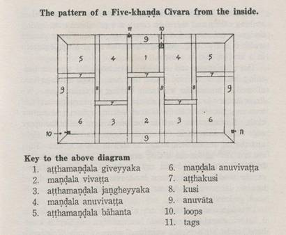

戒律綱要
The Entrance to the Vinaya
Vinayamukha (Ⅱ、Ⅲ)省略版
泰僧皇 公拍耶跋折羅禪那婆羅娑親王 禦輯
黃謹良 敬摭譯
訂正：2005.2.
原出版者：Mahāmakuṭarājavidyālaya
King Mahā Makuta’s Academy
Bangkok 1992
台灣 法雨道場
戒律綱要 目錄
iv引言：出家者應時常觀察十法
◆戒律綱要Vinayamukha (I)
第一品至第十品
比丘戒略釋（略）
◆戒律綱要Vinayamukha
(II)
1 第十一品 護身
3 第十二品 資具 三衣 衣料 作衣法 衣色 缽 缽量
資具 坐臥具
8 第十三品 依止
17 第十四品 行事 作事 行事 儀軌事
23 第十五品 禮敬
25 第十六品 安居
27 第十七品 布薩 自恣 布薩 一、持病比丘淸淨 二、持彼與欲 三、白季 四、僧數 五、敎誡比丘尼
僧布薩應具四法 自恣
36 第十八品 細行 非行 下劣行 不正命行
39 第十九品 四時藥 時食 非時食物 七日食 盡形壽藥
42
第二十品 物 僧物 附：律藏及善見律毘婆沙註釋
塔物 己物
46 第二十一品
毗尼羯磨 發露懺悔 附：懺罪法(一)(二)
繋念受持 說淨
55 第二十二品 雜項 四大依據 佛所特許 求護 四種敗失 不遊
58 第二十三品 僧羯磨
◆戒律綱要Vinayamukha
(III)
60 第二十四品 結界
結界 結界法 結界七樹界 水界
67 第二十五品 執事僧
一、掌衣 掌衣比丘 二、掌食 三、掌住處 四、掌工 掌庫
71 第二十六品 迦提衣
74 第二十七品 出家及具戒 出家
具戒 其他遮難
附錄：
79 諸白羯磨文
解不失衣界文
解同一住處（同一說戒）界文
結界問標 結同一住處（同一說戒）界文
結不失衣界文
立掌管比丘文 立分衣比丘
分與房舍文 分與迦提衣文
出家及具戒文 十學處文（沙彌十戒） 告缽衣文
受差問緣文
敎授問遮難文 白召求具戒入僧中文
求具戒文
白和尚文 正問遮難文
白授具戒羯磨文
敎誡文
101 後記
(以下缺)
第二十八品 The Way of Setting Vivāsādhikaraṇa(滅諍論諍事)
第二十九品 The Way of Setting Anuvādādhikaraṇa (滅教誡諍事)
第三十品 The Way of Setting Apattadhikaraṇa (滅事諍事)
第三十一品 Kiccādhikaraṇa
and Niggaha(事諍事與非難)
第三十二品 Schism and Concord of the Saṅgha(僧團之分裂與和合)
第三十三品 Miscellany (雜集)
Appendices (附錄)
Bhikkhunis (比丘尼)
Kammavācā section I (羯磨文I，部份)
Kammavācā section II (羯磨文II)
Kammavācā section III (羯磨文III)
|
編輯說明：
本電子檔案取自網友。內容已經過台灣‧法雨道場
dhammarain@gmail.com 編輯，改變的項目有：
1. 附加目錄，方便檢索。
2. 印刷本原來用直排，現在改橫排，因此，「右」字，改為「上」、「以上」。「左」改為「以下」。
3. 附加巴利文、英文，以便利比丘日用。
4. 必要時，附加「按：」語。
5. 譯文中有錯字，逕行更正。
6. 用「缽」替代：「鉢」=(金*本)
|
回目錄 出家者應時常觀察十法
諸比丘，有十種法，出家者應該時常觀察。哪十種法呢？
★一、出家者應該時常觀察：我已經是沒有階級的人(方外人)。
★二、出家者應該時常觀察：我(衣、食、住、藥)都是依靠他人供養。
★三、出家者應該時常觀察：我言行舉止不同(應該具足安詳的威儀，合乎沙門身份)。
四、出家者應該時常觀察：我有無以戒律來糾正自己呢？
五、出家者應該時常觀察：我那些修習梵行的道友，有無以戒律來糾正我呢？
六、出家者應該時常觀察：我所喜愛的、所悅意的東西，都在改變和分離。
七、出家者應該時常觀察：我對自己所造的業負責，我是業的繼承人，以業為胎，以業為親屬。無論我造什麼善惡業，我必須自己去承擔。
八、出家者應該時常觀察：我如何度過日日夜夜呢？
九、出家者應該時常觀察：我是否歡喜寂靜的住處呢？
十、出家者應該時常觀察：我是否證得上人法--殊勝的智見呢？當其他的道友在我臨終時問及此事，我不慚愧嗎？
諸比丘：出家者應該時常觀察這十法。
──《增支部》十集‧第五‧罵詈品‧四十八法。十集‧一百一 想，説沙門能修「三沙門想」，則圓滿能七法。三沙門想」是說前三項。 (明法比丘譯)

已故泰國僧王殿下
Somdet Phra Mahāsamaṇa Chao Krom Phraya Vajirañāṇavarorasa
泰僧皇 公拍耶跋折羅禪那婆羅娑親王 ( 1859 ~ 1920 )
戒律綱要(Ⅱ)
第十一品 護身
一、不應蓄長髮，不應蓄過二月，不應長過二指量(2英吋)。
二、不應蓄鬚髯。
三、不應蓄指爪甲，應剪去令爪甲齊指肉。不應磨擦爪甲艶亮。（但汚則令其淨）
四、不應蓄鼻孔毛，長出鼻孔外。
五、不應去狹處毛，卽衣蔭覆處及腋處。（但除病，爲去毛塗藥）(按：「衣蔭覆處」指「肛門」)
六、不應面塗粉。面塗粉水，（黃羌）塗面。面點色粉。不應身塗粉除爲治病。(按：「黃羌」是在釋文中提到的，為薑黃，turmeric, curcuma longa)
七、不應飾身。不佩用耳璫、瓔珞、珠披肩、腰帶、臂釧、手環、指環等。
八、不應照鏡或其他類似物，觀自影像。除因面瘡傷，照鏡塗藥。
九、不應非地、非時離衣。(按：非地：不適當的地方)
十、不應著俗家衣服。不應用俗家布被。(按：後面一句，原文沒說到。)
十一、比丘應嚼齒木（應刷牙齒）。(按：原文沒說到此事，只說到：排便之後，應該用水洗淨。如果沒有水或水瓢，應該用木片或其他東西刮乾淨。)
十二、不應割離狹處或近狹處二指量。
（原註：「狹處」(narrow places)，指：糞門(按：肛門)
(按：依照原文，已把第十一與十二條調換。「割離」是手術(satthakamma)。原文還說到：不許幫人灌腸(vatthikamma)，否則犯偷蘭遮。偷蘭遮：thullaccaya，意譯粗罪、粗惡、重罪。乃觸犯構成波羅夷(pārājika 斷頭罪，失去比丘資格)、僧殘(saṅghādisesa 僅次於波羅夷之重罪)未遂之罪。)
回目錄
回目錄
第十二品 資具
三 衣 (cīvara)
一、鬱多羅僧(uttarasaṅga)：卽上衣，亦稱七衣，披上身用。
二、安陀會(antaravāsaka)：卽下衣，亦稱內衣，五條衣，作下裙用。
三、僧伽梨(saṅghāti)：卽大衣，亦稱複衣，九條衣。無定用（經載佛弟子用爲敷佛坐臥處，披上身入俗家，及入寺中僧衆。泰僧用覆肩。緬甸及錫蘭僧用重披鬱多羅僧，入俗家，在寺反而不用。）
鬱多羅僧，長九搩手，廣六搩手。但可更長廣。(按：佛一張手[善逝搩手sugata-vidatthi]：手掌張開從大拇指至小指距離的長度，佛一張手等於中等身材的人之張手的三倍。請見：波逸提第89條。一張手距大概九英吋。)
安陀會，無定量，應上能掩臍，下應能掩膝蓋。大約長六肘，廣二肘。（但可更短狹）(按：一肘hattha等於手肘至指尖的距離或兩個張手，1肘=46~56 cm)
僧伽梨，準鬱多羅僧衣量。
衣料
一、樹皮。二、棉。三、野蠶絲。四、獸毛（除人髮毛）。五、蔴。六、以上五種混合織品。除第六種，不得作衣。
作衣法
衣必割截，作摩竭陀國稻田形。毎段有線隔，大段稱曼陀羅，小段稱阿陀陀曼陀羅，有隔如田畦。合各段各隔，稱為一條，毎衣最少應有五條，亦得過五，卽七、九、十一條均可。四周有緣。上毎段各有名稱。
其他浴雨水衣。披衣，羊毛衣。不必割截。

|
1.aṭṭhamaṇḍala gīveyyaka 頸部貼條
|
7. aṭṭhakusi 橫隔
|
|
2. maṇḍala vivaṭṭa 中條
|
8.kusi
縱隔
|
|
3. aṭṭhamaṇḍala jaṇgheyyaka腳部貼條
|
9.
anuvāta 外緣
|
|
4. maṇḍala
anuvivaṭṭa 側條
|
10.loops環、紐 (gaṇṭhī)
|
|
5. aṭṭhamaṇḍala bāhanta 邊條
|
11.
tags 扣 (pāsaka)
|
|
6. maṇḍala
anuvivaṭṭa側條
|
|
長：5½ 肘尺，寬 4½ 肘尺 1肘hattha =
46~56 cm
衣色
佛制令以六物染色，一、樹根，二、樹枝，三、樹皮，四、樹葉，五、樹花，六、樹菓等煎水染，無制定樹種，亦無制定色。稱爲袈裟，譯義爲不正色染。又禁用靑、黃、紅、緋紅、赤、淺紅、黑等色。一般認爲黃混深紅色或深黃色爲袈裟色。
衣不得有艶彩，禁用有獸紋、花紋、條紋。（除有小點而無艶彩者）
大衣及中衣，有鈎及紐，但無明制施於何處，佛制許令用鈎紐，令風不吹揚衣。紐不得用美好物，制用骨、牙、角、竹、木(lacquered wood)、梓梗(heart wood)、椰殻、金屬、螺、線織等。
中衣許用腰帶。（但禁用美織品帶）
三衣外，佛開用長衣十日。浴雨水衣及掩瘡衣，可暫時用。雨水衣制長六搩手，廣三搩手半。雨季中用，又制蓄一件。掩瘡衣長四搩手廣二搩手，於身患瘡疥時用，亦制蓄一件，病癒不許用。
又開用尼師壇，卽敷坐處用及臥處用之布。拭面巾、鉢衣、裙、皆無制數，亦無制色。坐臥具通用黃色。
此外諸衣布，自長八指廣四指以上，皆作常住物，公物。
尼師壇，制長二搩手，廣一搩手半，緣一搩手，
鉢
|
鉢(patta)是隨身資具之一，佛制，鉢有二種：一是泥製，一是鐵製。不許用餘器代鉢，如土釜、骷髏、葫蘆等。
又禁用十種鉢：謂金、銀、末尼、琉璃、瑪碯珠、銅、靑銅、錫、鉛、木等製鉢。
|

|
鉢量
鉢分大、中、小三量，小鉢容飯可二人食，中鉢五人食，大鉢十人食。現通用鉢，當爲中鉢量，（圓週約二十六英寸），不僅容飯，兼亦菜食，故可足二人食。禁用鉢盛殘食物，鉢內洗手。飯後必洗鉢，用布拭淨，日下曬乾。
遠行時，許用布作鉢衣（袋鉢），左右作長帶，斜掛肩上。
鉢蓋則爲後來所增造，爲整齊淸淨故也。
資具 (parikkāra)
佛昔用隨身資具，僅有鉢、三衣、坐臥具、針盒、腰帶。後歷有增加，分述如下：
針盒：用貯針縫補三衣。禁用骨、牙、角製。許用木製、鐵製。
濾水：用布，或用竹管，一端束布。佛制比丘飮水必先濾。無濾水器比丘，不許遠行半由旬(按：一由旬yojana等於現在的16公里或10英里)以上。無濾水布，可用複衣代濾。又制：如同行比丘借用濾水器，必借與之。
濾水，佛意在防誤飮水生物。亦寓用淨潔水之意。
剃刀：剃刀許有刀鞘，磨刀石，淨刀布。但在俗以剃髮爲生而出家者，不許蓄剃刀。
傘：無定制，但禁用艶彩或傘緣有飾品。禁張傘入俗家及巷里多俗家處。除病，爲防袈裟濕及護身。
鞋：分二種；似爲有跟(pādukā)及無跟（upāhanā無跟如木屐）。有跟者，禁用飾以末尼，琉璃，瑪碯之木製、金製、銀製、銅製、錫製、鋅製者。及用糖椰樹(sugar-palm= jaggery-palm?)、竹葉、不同種類的草、棗椰樹(date-palm)、葺草織、或毛織者。佛制所許之無跟鞋：皮製，僅有鞋底，無覆趺跟。舊者可用四重皮，新製之四重皮鞋，限用邉地。許有索繫束。
禁用藍、黃、紅、黑等色鞋。（但令其原色褪失或令黯黑，卽可用）
禁用獅子、虎、獺、貓、鹿、麝、鴟(=鷹)等皮鑲鞋緣。
禁用覆趺、覆跟、覆脛鞋，鞋底禁塡棉。
禁飾禽羽，孔雀羽。禁令（鞋尖）聳起如羊角，蠍子鈎。
禁著鞋入俗家，入非自寺。除病，足病，熱季地熱。
所有資具，似應因時、因地而定。故尊宿(按：長老)謂資具，以用簡省者爲是。
坐臥具
臥牀(mañca, pītha)不得高過八指量(8英吋)，牀足不得刻有獸形。
坐牀(āsandi)如凳，四方(形)，可坐一人二人不等。昔禁高過八指量，後許。又許有背倚手倚(卽交椅)。亦可高過八指量。
許用臥褥，但不許塡棉(按：kapok絲棉樹)。許塡羊毛、碎布、樹皮、草、樹葉、鳥羽、其他獸毛，禁用人髮，禁用龍腦樹葉(按：borneo camphor，因為它的氣味。在Atthakathā有記載。)。
牀禁用廣大，但無制定，意不許兩人共臥，故可以定兩人牀爲廣大牀。
許用枕：大小約如人首，不許用長過半人身量大枕。
坐臥布：卽坐臥褥，美飾者不許用。氈毛長四指量者、羊毛製者、繡者、有紋者、有花者、有獸形者、純白者、毛聳立者、廣大可容十六舞姬者、金與絲混織者、純絲者、柔毛者、麝皮者、上有架之臥牀披象背布、披馬背布、敷車座布、皆不許用。
又在俗所用坐臥具，許坐用。許坐柔軟褥，如棉坐等，除師子座。又不許用俗家臥具。
不許比丘共臥一牀，或共用一被。但可共坐一凳一牀。惟同坐者，法臘須相近，不得過三臘。剃度師與弟子，不許同坐一牀。又比丘臥處，不許散佈香花。
回目錄
第十三品 依止 (Nissaya)
(以下錄自：庫那威羅(德雄)比丘等譯：《依止》第一章〈制依止之緣起〉當時，諸比丘沒有戒師訓誡、教導，托缽時上衣下裳穿著不整、威儀不具；當人們正在用餐時，他們把自己的缽舉到（那些人的）軟食上面，以乞求剩餘的食物；把缽舉到（那些人的）硬食上面，以乞求剩餘的食物；把缽舉到（那些人的）可口食物上面，以乞求剩餘的食物；把缽舉到（那些人的）飲料上面，以乞求剩餘的食物；他們親自開口討取飯菜來吃；也在食堂裡大聲吵鬧。
眾人鄙視、非難及傳言道：「這些沙門釋子怎麼可以托缽時上衣下裳穿著不整、威儀不具；當人們正在用餐時，他們把自己的缽舉到（那些人的）軟食上面，以乞求剩餘的食物；把缽舉到（那些人的）硬食上面，以乞求剩餘的食物；把缽舉到（那些人的）可口食物上面，以乞求剩餘的食物；把缽舉到（那些人的）飲料上面，以乞求剩餘的食物；他們親自開口討取飯菜來吃；也在食堂裡大聲吵鬧，就好像用餐時的婆羅門？」
諸比丘聽到眾人的鄙視、非難及傳言。諸比丘中少欲知足、懷慚知愧而好學者亦鄙視、非難及傳言道：「這些比丘怎麼可以托缽時上衣下裳穿著不整、威儀不具；當人們正在用餐時，他們把自己的缽舉到（那些人的）軟食上面，以乞求剩餘的食物；把缽舉到（那些人的）硬食上面，以乞求剩餘的食物；把缽舉到（那些人的）可口食物上面，以乞求剩餘的食物；把缽舉到（那些人的）飲料上面，以乞求剩餘的食物；他們親自開口討取飯菜來吃；也在食堂裡大聲吵鬧？」
當時，這些比丘把這件事告知世尊。世尊即由此因緣，於此時機，令比丘眾集會之後，問諸比丘道：「諸比丘，比丘眾托缽時上衣下裳穿著不整、威儀不具；當人們正在用餐時，他們把自己的缽舉到（那些人的）軟食上面，以乞求剩餘的食物；把缽舉到（那些人的）硬食上面，以乞求剩餘的食物；把缽舉到（那些人的）可口食物上面，以乞求剩餘的食物；把缽舉到（那些人的）飲料上面，以乞求剩餘的食物；他們親自開口討取飯菜來吃；也在食堂裡大聲吵鬧。這些事是否是真的？」
「是真的，世尊。」
佛世尊即呵責他們道：「諸比丘，此等愚人所為不適、不當、非沙門應有、非為許可、不當為。諸比丘，此等愚人怎麼可以托缽時上衣下裳穿著不整、威儀不具；當人們正在用餐時，他們把自己的缽舉到（那些人的）軟食上面，以乞求剩餘的食物；把缽舉到（那些人的）硬食上面，以乞求剩餘的食物；把缽舉到（那些人的）可口食物上面，以乞求剩餘的食物；把缽舉到（那些人的）飲料上面，以乞求剩餘的食物；親自開口討取飯菜來吃；也在食堂裡大聲吵鬧？諸比丘，這並不能令未信者生信、已信者有所增長；反而會令到未信者不信、已信者心生動搖。」
當時，在呵責諸比丘之後，世尊多方說示難扶養、難護持、多欲、不知足、執著（障礙法）與懈怠之非；又多方讚嘆易扶養、易護持、少欲、知足、棄除（惡法）、謹慎、和善、減損（障礙法）與精進。為諸比丘據理說示何為適當之法後，世尊說道：「諸比丘，我准許有戒師。戒師應有如對待兒子般對待其弟子；弟子應有如對待父親般對待其戒師。若如此互相恭敬、尊敬，和氣相處，他們於法於律即會有增益成長。」見：《南傳律藏‧第三部‧大品Mahāvagga大犍度‧誦品5‧25之1至6段60頁》)
比丘未滿五臘，稱爲小師。應依止親敎師，受彼敎授。(按：若是出家受戒之後，與戒師同住，則戒師就是依止師，泰國法宗派和大眾派採用的依止文是：Ahaṁ, bhante, nissayaṁ yācāmi. 尊者，我請求依止。有些地區依止文如下：Upajjhāyo me,
bhante, hohi. 尊者，請您當我的戒師。)或依止一宿比丘爲親敎師。求依止時，應偏袒右肩，長跪合掌，白言：大徳！請爲我親敎師。
(先唸)Namo tassa
Bhagavato Arahato Sammāsambuddhassa.(3x)
禮敬世尊、阿羅漢、正等正覺者。(三遍)
Ācariyo me, bhante, hohi, āyasmato
nissāya
vacchāmi.
阿甲里優 每 潘爹 後嘻(ㄏㄧ) 阿牙斯馬多 尼沙牙 瓦恰米
大德，請您當我的教授師，我將依止尊者。
(親敎師答：Patirūpaṁ.適當；有時回答：Sādhu.很好；Lahu可以；Opāyikaṁ適當；Pāsādikena sampādehi. 謹慎莫放逸。有時只以手勢示意，皆算完成依止。)
彼比丘應答言：善哉！我接受。
Sādhu, okāsa, sampaicchāmi.
比丘第二次說：
Dutiyam'pi Ācariyo
me, bhante, hohi, āyasmato nissāya vacchāmi.
親敎師答：Patirūpaṁ.適當
彼比丘應答言：善哉！我接受。
Sādhu, okāsa, sampaicchāmi.
比丘第三次說：
Tatiyam'pi Ācariyo
me, bhante, hohi, āyasmato nissāya vacchāmi.
親敎師答：Patirūpaṁ.適當
彼比丘應答言：善哉！我接受。
Sādhu, okāsa, sampaicchāmi.
(接下來，念以下的言詞為承諾他對依止師的職責：
Ajjataggedāni
thero mayhaṁ bhāro, ahampi therassa bhāro.
阿加打給達尼 貼羅 買杭 把羅 阿杭比 貼拉沙 把羅
從今天開始，長老是我的職責，我是長老的職責。
「職責」前者是指弟子應侍奉依止師的義務，後者是指依止師對弟子的義務。接下來，頂禮教授師三拜。從那一天開始彼比丘就住在教授師的寺院。若出家未滿五年的比丘不請求依止，他每天則犯突吉羅罪（dukkaṭa惡作）。
弟子對依止師有下述這五項義務：
1. 侍奉依止師，提供所需的服務：
a. 準備依止師晨起漱洗所需的盥洗用具。
b. 敷設座位與奉上早餐，以及餐後清理。
c. 準備依止師入村托缽所需的袈裟與缽。
d. 若依止師需要時，隨從其托缽，回程時代為攜持袈裟與缽。
e. 敷設座位與奉上正餐，以及餐後清理。
f. 預備浴具，若依止師進入浴室，弟子應同入，並照料所需。
g. 當依止師擬給予教導時，弟子應聽受研學教法(dhamma)與戒律(vinaya)。（《大品》將此項敘述為「諷誦」--學習背誦經文，或「質問」--探究經文的義理。）
h. 清掃依止師的寢室，及住處的其他部分，如：廁所、庫房等。
2. 協助依止師解決任何有關教法與戒律的問題。
《大品》列出以下的例子：
a.如果依止師對梵行生起不欣喜的意念，弟子應安撫其不滿之心，或令他人安撫。
b.如果依止師對於持戒心生焦慮，弟子應安撫其焦慮，或令他人安撫。
c.如果依止師心中生起邪見，弟子應規勸他放棄邪見或令他人規勸。
d.如果依止師違犯僧伽婆尸沙(saṅghādisesa)罪，弟子應盡自己最大的努力，促使僧團給予依止師行別住（parivāsa）、摩那埵(mānatta)、與出罪(abbhāna)，或令他人促使。
e.如果僧團將對依止師施行制裁的羯磨法（僧團決議），弟子應勸阻之。根據律註，這意味在僧團集會之前，弟子應前往勸說僧團的各個成員，使他們放棄制裁議案的施加。如果他無法勸阻，他必須勸請減輕制裁（如：從驅出羯磨減為呵責羯磨）。然而，如果他們仍然認定應當施行某項制裁，在僧團會議的進行中，弟子不應反對。一旦制裁議案通過之後，弟子應致力於幫助依止師順從僧團的決議，奉行制裁的規定，以促使僧團早日解除該項制裁。
3. 為依止師洗滌、縫製、調染袈裟。
4. 表現對依止師的忠誠與尊敬：
a.未得到依止師的允許之前，弟子不應贈送物品給他人，或接受他人贈送的物品，亦不應奉事他人或接受他人的奉事。根據律註，這裏的「他人」意指：與依止師關係惡劣的人。
b.弟子必須得到依止師的允許之後，才能入村、入墳場（律註：去修行）或離開共住的區域。然而，律註談到：如果依止師拒絕弟子第一次的請求，弟子應當再請求兩次，並盡可能地陳述自己的理由。如果依止師仍然拒絕，弟子應考慮自己的處境，如果繼續與依止師共住對自己的研學與修行沒有幫助，而依止師要弟子留下只是因為需要人奉事，如此，弟子理應離開，並前往其他住處依止另外的師長。
5. 依止師生病時弟子應細心照料，直到依止師痊癒或命終。《大品‧大犍度‧誦品5‧25段‧60頁》
根據律註，弟子生病時可以免行這些義務，否則，只要他還在依止的期間，他必須對和尚（戒師）履行上述的所有義務。至於第1到第3項義務，即使弟子已經免除依止，然而只要弟子與戒師雙方都依然存活而且是比丘身分，弟子就依然必須對戒師履行這三項義務。
至於對教授師（阿闍梨）的義務，律註中列出四種教授師，即：
一、出家教授師（出家儀式中，授與沙彌十戒給弟子的師長）。
二、羯磨教授師（受比丘戒時，宣讀白四羯磨文的師長）。
三、佛法教授師（教導弟子巴利文(Pāli)及經典(Canon)的師長）。
四、依止教授師（接受弟子依止安住的師長）。
對於依止教授師，只要還依止他而住的期間，弟子必須履行上述所有義務。至於對其他三種教授師，只要雙方都依然存活而且是比丘身分，弟子必須履行第1到第3項義務。
律註補充說：如果依止師已經有一位弟子對他履行這些義務，他可以通知其餘弟子不須履行這些義務。如果依止師因忽略而未通知，正在履行義務的弟子可以通知其他弟子：他會負責照料依止師。這也使其他弟子免除對義務的履行，否則對於每一項他們疏忽而未履行的義務，他們都違犯一次突吉羅(dukkaṭa)罪。
依止師對弟子的義務
1. 提昇弟子的教育，以背誦、質問、告誡、教授等方式傳授弟子教法(dhamma)與戒律(vinaya)。
2. 供給必需品給弟子，如果弟子缺少任何生活的必需品，依止師若有多餘的用品，應補足弟子的所缺。
3. 弟子生病時，照顧弟子，提供所需，給予上述「弟子對依止師的義務」第1項中所提到的各項服務。
4. 協助弟子解決任何有關教法(dhamma)與戒律(vinaya)的問題。給予上述「弟子對依止師的義務」第2項中所提到的各項服務。
5. 教導弟子如何洗滌、縫製、調染袈裟。如果基於某種理由，弟子無法做這些事務，依止師應命令他人幫忙弟子做。
6. 弟子生病時，依止師應細心照顧，直到弟子痊癒或命終。《大品‧大犍度‧誦品5‧26段‧67頁》
根據律註，只要師生雙方都還存活而且還是比丘身分，戒師（和尚upajjhāya）、出家教授師（阿闍梨ācariya）、羯磨教授師必須對弟子履行這些義務。至於佛法教授師與依止教授師，只在弟子與他共住的期間必須履行這些義務。
──錄自：庫那威羅比丘等譯：《依止》)
如是，二比丘則爲依止師及弟子。
佛制令師徒應和敬一心，互相資濟，師視徒如子，徒尊師如父。(詳見：《大品‧大犍度‧誦品5‧25之6段‧62頁；誦品6‧32之1段‧79頁》)
依止師因五事而離彼依止：
一、師離去。
二、師返俗。
三、師死。
四、師皈外道。
五、師令徒離。
徒亦因五事而離依止，
一、自離去。
二、返俗。
三、死。
四、皈外道。
五、師令離。
離後復返，或後復往依止，則仍是依止師。
滿五臘後，師可令徒離依止。
徒視師如父，名爲愛師。依師誨行，名爲 敬師。重師命令，名爲尊師。望師康樂無憂，師喜則喜，師憂則憂，名爲順師。違於此者，則爲不愛、不敬、不尊、不順。
師於徒應護餋，敎誨、慈悲、爲徒模範。徒有過失，必呵責之。
徒離親教師後，應另尋一大臘比丘依止爲師。依止儀如前，但易白言：請大徳爲我師尊，我依止大徳。
被依止之比丘，稱爲師尊（阿闍黎）。卽代其親敎師而爲彼師，可稱爲依止師。
彼徒若遇親教師，則同於離依止師之依止。
故親教師離去後，必再向依止師，重求依止。事頗繁劇(按：繁劇：事務繁多)，甚可開之。
未滿五臘比丘，雖精經律，制亦不許無依止師。除遠行，瞻護病人在森林住，定在一地修行，可離依止師；但須自念，有尊宿比丘來，我當依止之。
滿五臘，未滿十臘比丘，稱爲中師，佛制可離依止師，但未能自護亦應有依止師。能自護之比丘，應有如是徳：
一、有信、慚、愧、勸、念。
二、有戒行、正見、多聞、慧。
三、知犯不犯戒，明記戒律。
四、滿五臘。
以上除滿五臘外，餘可量情而定。
有大徳比丘，離能自護，但不能統理僧衆。
滿十臘比丘，稱爲長老，亦稱大師。可統理僧衆；可爲剃度師；可爲依止師；可有沙彌近事。
可統僧衆之徳；依中師之徳，而加：
一、能贍護病弟子；知犯戒、知懺淨法。
二、能敎示戒律、梵行，能止弟子邪見。
三、滿十臘。
以上除十臘外，餘可量情而定。
回目錄
回目錄
第十四品 行 事 (Vatta)
本品分爲作事、儀軌事等，三事述之。
作 事 (kiccavatta)
甲、弟子在依止親敎師期中，應職是存念承事親敎師。
一、晨旦奉水、奉齒木(danta-kaṭṭha或danta-poṇa，刷牙用)。
二、思學於師。
三、愛護師，勿令師損譽、懈怠、邪見。
四、善順師意。
五、敬師。
六、外出必先告師。
七、師病必贍護。
乙、親敎師應如是資敎弟子
一、敎誡。
二、資助衣鉢及餘資具。
三、愛護弟子；無令損譽、懈怠、邪見。
四、贍護疾病。
依止師視同親敎師。
丙、比丘往他寺、應如是行：
一、尊敬彼寺，入寺脫鞋、收傘、整衣、禮大臘比丘。
二、彼比丘在掃塔，在療病時，應候彼事畢，乃往禮見。
三、洗足，依臘就座。
四、應示親愛，需飮水、卽飮水，需用水、卽用水。
五、如住宿，詢問彼寺規。問托鉢、村落、外道住居險難處，厠所、池水等事。
六、須淨潔彼許用坐臥具。
丁、比丘有客比丘來訪、應如是行：
一、應問訊接待。
二、尊重客比丘，與水洗足、敷座、供飮水用水。
三、如臘過己，當接其衣鉢。禮彼；爲彼洗足，以油塗足，爲彼扇涼。如臘不及己，則指座令坐，指飮水用水所在。如客比丘欲住宿，應爲敷坐臥具，答彼比丘所問寺規及諸事。
戊、比丘欲往他處住，應如是行：
一、淨潔房舍：房舍破漏，應爲修理。用物安置齊整，闗閉窗戶。
二、向掌房舍比丘交還住房，或向同住比丘(還)交。如單人住，向外護交(還)。
三、禮辭親敎師，依止師。
已、入聚落托鉢比丘，應如是行：
一、衣裳整齊。
二、鉢在衣內，受供時取出。
三、嚴整威儀，如律中說。
四、先定去路返路。
五、知彼欲供，守護威儀而受。
六、先返寺比丘，應爲次返比丘敷座，置飮水，食器，洗足水等。最後返比丘飯食訖，應收整諸坐具、食具。食在食堂同食。
庚、比丘食時，應如是行：
一、整衣裳。
二、坐適宜座，勿近坐長老比丘，應間一二座。長老令坐乃坐。
三、勿坐複衣上（原註，此甚煩難，亦已開可坐）。
四、施主供食，應生度化心而受供。如施主合供比丘衆，或用大盆分供，酌量而受，勿令他比丘少。
五、在食堂，比丘衆未取食，長老未到，不先食。除大食堂，或不可遲(到)。
六、食應整齊肅靜，如律中說。
七、比丘衆食事未訖，不應自先洗鉢（卽今之不先淨手，不先訖食事也）。
八、洗手漱囗，莫令水濺他比丘或自衣。
九、在施主家食訖，應誦隨喜頌，由首座僧誦，其他可先辭返，今則同誦同返。
十、在小食堂食，末座先出堂外候。如大食堂，首座比丘先出。行進列行，中一人間。
十一、不應將有殘食之洗鉢水，棄在施主家。
辛、房舍
佛制樹下宿。故樹下爲比丘之(原始)房舍(senāsana)。惟在雨季，必有蔽雨之所，無論爲天然之山洞，或人工之房舍皆可，但除泥製屋(jar土甕)及樹穴。
僧衆房舍，比丘皆可住宿，惟除犯戒被擯。
毎年應重新分與房舍二次：一在初安居日，一在解安居日。分與時不許爭執，不許長住一房。施主所供房舍，不許長住。小病比丘，不應獨住房舍。
掌房舍比丘，應量情分與，勿令病比丘遷移房舍。勿令大臘比丘，護小臘比丘房。患可厭病比丘，應獨居一房。勿遷護理常住用物比丘，勿遷多聞比丘，勿遷能修理房舍比丘。此之所謂遷，乃指自好房舍，遷往較劣房舍。又、勿令一比丘，住二房舍。
比丘住宿房舍，應如是行：
一、不令房舍汚垢，不隨地吐痰。不著鞋入房。足未淨未乾不入房，不倚畫飾之牆壁、柱、門、窗。坐臥褥，坐臥須先敷布，勿令褥汚。
二、應淨房舍，令整潔無塵。
三、勿令房舍損壊。
四、房舍資具，牀椅凳等，應陳設整齊。
五、備足飮水、用水。
六、房舍所有資具，勿取往他房舍用。
壬、便利之事，應如是行
一、大便、小便、浴身、以先後到爲次序，於此不以法臘爲序。
二、須輕步出入，先問後入。大便及洗淨，勿有聲。
三、勿著衣入。
四、若淨用木片布紙，須擇潔者。
五、大便時，勿兼作餘事。
六、勿令厠穢，不吐痰其地，勿擲木片厠中。
七、令厠潔淨，見汚則淨，見亂則整，木片滿則爲傾棄，無水則爲之盛水。
癸、患病比丘
有比丘病，法友比丘應盡心瞻護。佛言：諸比丘！汝等無有父母，汝等不相瞻護，誰將瞻護汝等。若比丘，瞻護病比丘，與瞻護佛同。
病比丘，有親敎師，有依止師，有弟子，則令彼等瞻護。如無，則令同親敎師、同依止師比丘瞻護。如客比丘病，令僧衆輪値瞻護。如是佛意乃令瞻護病比丘，爲僧衆之責。
患病比丘，知己爲僧衆之累，應自足自安，堪忍苦受。患病沙彌，與比丘同。
病比丘如在他地，乃至安居期中，佛許彼病比丘法友，往彼地瞻護，亦開依止及羯磨等等。
行 事
一、不許踐踏敷座之白布，以令布穢，不雅觀故。亦令餘僧，不敢坐故。
二、坐時，先審視座傍，有無用物，勿令其傾倒失儀。
三、不許同女人或黃門同坐一椅一長座。法臘相差三臘，亦不應同座坐。
四、食未訖，不許起身。遇大臘比丘來入座，亦不許起立讓座。
五、日間臥息，應闗閉房門。
六、不許將大便、小便、塵垢、殘餘物、傾擲門外，不許傾擲牆外，不許傾擲在田園植物上。
七、不許攀登樹上，除因事故。如森林行，登樹察看遠近方向，可登四肘高。因避野獸，可更高。(按：一肘等於手肘至指尖的距離或兩個張手，一肘=46~56 cm)
八、不許因觀聽伎舞歌樂而往。
九、不許唱長音説法（似唱歌之說法）。(按：《增支部》五集‧二百九 (A. III, p.251)：「諸比丘！此等五者，是以拉長歌音而誦法之失。以何為五？己亦愛著其音；他亦愛著其音；在家非難：我等歌詠，正如是，此等之釋迦子亦歌詠；或練音調而妨礙定心；爾後之人模仿(於彼)。諸比丘！此等五者，是以拉長歌音而誦法之失。」)
十、不許觸不應執物，謂女人、女服、女飾、女形物、雌傍生、金、銀、寳物、琉璃、玻璃、車渠、赤珠、瑪碯、螺、石共十種。螺是金珠瑩飾之螺，石是玉等。兵器，捕捉水陸禽獸等工具，音樂器具，人所種植之稻、粟及菓子，皆不應執。
儀軌事
著衣事、鉢事、摺衣事、淨鞋事（略）。
爲長老扇涼：應在長老背後扇，扇足部一次，扇身一次，扇頭部一次，反復如是扇。
窗：日間閉，夜間開。
行：依臘列，長(老)行而(跟)行，中間，間一人量。
說戒羯磨：偏袒衣，長跪，合掌。
唱南無(Namo tassa bhagavato arahato sammāsambuddhassa.)，應三唱。
以上事，可依時、依地稍更改，但亦須得宜，否則事事皆開，終則無所持矣。
回目錄
第十五品 禮敬 (Gārava)
三寳，爲佛子最極上之皈依，故大藏不許戱佛法僧。戱者，謂用身戱、語戱，如因娛樂而以佛僧故事爲劇本。對獨覺佛，亦不應作劇本。佛僧之史跡，亦不應以遊戱態度講述。
和敬相向，爲團軆共住之美徳，佛令依大小臘，行頂禮、起立、迎接、合掌、和顏、問訊等禮。受供，亦依臘受供。
比丘不禮在家人，亦不禮異敎行人，不禮小臘比丘，唯禮大臘比丘。但亦不禮不談法之大臘比丘（當指不務梵行之放逸比丘），又不禮如是大臘比丘：
一、彼在出罪懴淨時。
二、彼在僧中出罪、別食時。
三、彼正在離衣時。
四、在入俗家或路行時。
五、在暗中不互見時。
六、彼不覺知時——如睡時。
七、彼在食時。
八、彼在便利時。
起立迎接：在大臘比丘所，不起立迎接其他小臘比丘。在寺中集僧時，不起立迎接餘比丘。
合掌：多長跪合掌。對小臘比丘，亦可合掌，如懴罪、羯磨等。對長老，亦可合掌立。
和顏問訊：用對小臘比丘，對患病弟子。
佛世，比丘互呼爲具壽（Āvuso亦稱:慧命），小臘比丘呼大臘比丘爲大徳(Bhante)。
小臘比丘說法講經時，可較大臘比丘坐高座，或同等座，爲尊法故。
小臘比丘欲說法時，應白大臘比丘求許准，以說法爲大臘比丘事，除大臘比丘有故不說。
與大臘比丘共住一房，若說法、敎誨、演經、燃熄燈火，闗閉窗戶應先請大臘比丘許准，除先許准，則免請。
若親敎師、依止師跣足(按：赤腳)行，弟子不可著鞋同行。
可任親敎師、依止師者，應滿十臘。又對弟子應大十臘，如四臘比丘其二師，應滿十四臘。
於制底（塔cetiya）所，應恭敬尊重，不張傘、不著鞋、不輕浮、不高聲語、不伸足坐，不於附近大小便、不吐痰、此是敬重之意。
若懴淨說罪時，應偏袒長跪合掌說。
聽說戒說法時，不交談、不咳嗽、不先離座。如連宵講，應在完品小息時離座，開品前入座。
有佛法文字書辭，不步越過、不踐踏，以上是禮敬法。
在僧衆中應偏袒，除入聚落，或爲攝護威儀故。
回目錄
回目錄
第十六品 安 居 (Vassāvāsa)
安居期是雨季期，外出不便，故在寺安居三個月。稱安居，或稱坐夏（因亦値熱季故）。
安居期分二期。一稱前安居，於印度曆八月黑分一日（十六日）開始。一稱後安居，在九月十六日開始。（爲何制定二期？第九世僧皇，當解爲因閏月之故，故可以遲一月安居。）
雨季共四個月：爲何不安居四個月，而安居三月？此則以最後月爲作三衣期，又季末月少雨之故。
安居比丘，房舍必有覆蔽，有門可開閉，不許住停屍屋、傘下、布幕、甕（當指泥造房舍）、樹穴。
寺中掌房比丘，應在安居前，依安居比丘數，分與怺舍。安居比丘應淨潔房舍，備飮用水。
安居時所爲何事？佛制須繋念，卽念住此三月。故定初安居日，僧衆齊集誦言：
“我於雨季，依此寺住三月安居。”
Imasiṁ āvāse imaṁ temāsaṁ vassaṁ
upema.
同在一處安居：所謂處，當何所指？可指毎一僧房，亦可指一寺，故又必於自房，各自誦言：
“我於雨季，依此房住三月安居。”
Imasiṁ vihāre imaṁ temāsaṁ vassaṁ
upemi.
在安居期間，比丘不應外出。
若比丘與商隊同行，與牛車隊同行，乘商船行，應於初安居日，自繋念言：
“我於此安居。”
Idha vassaṁ upemi.
若到達有比丘處，可就有比丘安居。若彼商隊、牛車隊、商船到達彼地，不再行進，可就有比丘處安居。
安居期中，是修沙門行期，不許別定不公之規約，如不許讀經、不許說法、不許談話、令修頭陀行。但許互勉讀誦經律，勸令精進，望行頭陀，不多說話，和敬無諍，不惱亂人。
安居比丘，應在界內安居三月，至自恣日後，始可出界外。在安居期中，出界外過七日，則破安居。
七日中繋念返界內，但因有險難不得還，亦可不還。又許自恣前七日，可出界外，不再歸還。
可過七日之事由，稱七日法，有如下列：
一、法友或在俗父母病，往省視療護。
二、因僧衆事，如僧房舍穨壊，急須修補。
三、護法施主延請，爲増上彼信心而往。
類似以上三項諸事，亦可量情出界外。
在安居期中，因險難不能安居而離去者，則破安居，但不破戒。險難謂如是等難：
一、惡獸、盜賊鬼魅等侵害。
二、房舍被焚或水淹。
三、托鉢難。
四、無飮食、醫藥、外護、施主。
五、女人或親戚，多來訪談，或以財誘，欲破梵行，可卽出界外。又見所住界地，有無主之伏財，亦應出界外。
六、他處比丘，不和敬住，爲往彼地滅諍。
比丘應諾在家人請安居，或約比丘同安居，倘若非故意不如請如約安居者，犯輕戒，須說罪懴悔。如故意，犯單墮及妄語戒。
回目錄
第十七品 布薩(Uposatha)、自恣(Pavāraṇā)
布 薩 (uposatha)
布薩是修行之一，譯義爲「淨住」，佛世令於毎月白分、黑分、半分，卽十五日、三十日（或二十九日），初八日、二十三日爲布薩日。亦是在家人精誠持戒日。但僧衆則毎月白分日、黑分日，卽十五日三十日或二十九日，爲布薩日。
佛常於布薩日說戒，後以僧衆中有不淨比丘，遂改由僧衆自作，稱誦波羅提木叉，卽誦佛所制戒律條文。
亦有非白分、黑分日布薩，卽僧破而復和日，稱和敬布薩。故布薩有三日，卽十五日，三十日（或二九日）及僧和敬日。
若四比丘以上，制令白衆說戒。若三若二比丘，令對首說，各相對說戒淸淨。若是一比丘，應心念說戒。故布薩說戒有三種：卽僧衆、對首、一比丘。所作業爲——誦戒本，互說淸淨，心自念說戒。
毎寺應有說戒堂，最少可容二十一比丘，爲集僧說戒用，佛制不得一寺有二說戒堂。
說戒日，由長老比丘先往說戒堂，令比丘打掃淸淨，燃燈、備飮用水、敷座，又必先預行五事：
一、持病比丘淸淨
界內比丘病，不能往說戒堂，應請一比丘，持彼淸淨白僧衆。制令彼病比丘，偏袒長跪合掌，向持淸淨比丘言：
“我授我淸淨，請大徳持我淸淨往彼。請大徳爲我，說我淸淨。”
Pārisuddhiṁ dammi, pārisuddhiṁ
me hara, pārisuddhiṁ me ārocehi.
(下座比丘用haratha(持) 替代hara；ārocetha(告示)替代ārocehi. )
持淸淨比丘，應如何白僧衆，無制定，但依理應如是白衆：
“大徳僧聽！某某比丘，彼自誓言(：我)淸淨，請大徳僧知彼是淸淨。”
Āyasmā, bhante, Uttaro gilāno pārisuddho’ti paṭijāmi pārisuddho’ti taṁ saṅgho dhāretu.
(Āyasmā Uttaro 須用病比丘之名，病比丘如果是上座則用Uttaro bhante bhikkhu)
如是，則病比丘，已作布薩法。
二、持彼與欲
凡布薩或他事羯磨，界內同住比丘，皆應入僧衆（參加會議），若缺彼，則不成僧衆，故許因事不能入僧衆，可委派代表參加，是爲與欲（委託代表）。
若比丘知有僧事集衆，應偏袒長跪合掌，向受欲比丘言：
“我與我欲，請持我欲至彼，爲我說我欲。”
Chandaṁ
dammi, chandaṁ me hara, chandaṁ me ārocehi.
彼受欲比丘，持欲入僧衆，應如是言：
“大徳僧聽！某某比丘，與欲於我，我持彼欲來。大徳當如是知。”
Āyasmā, bhante, Uttaro mayhaṁ chandaṁ adāsi, tassa chando mayā āhaṭo sādhu bhante saṅgho dhāretu.
說欲及說淸淨，如同一事一時，應言：與欲淸淨。
(Āyasmā, bhante, Uttaro mayhaṁ gilāno mayhaṁ
chandañca pārisuddhiñca adāsi tassa chando ca pārisuddhi ca mayā āhaṭā, sādhu bhante saṅgho dhāretu.“大徳僧聽！某某比丘，與欲與清淨於我，我持彼欲與清淨來。大徳當如是知。”)
三、白 季
佛世年分三季：謂熱季、寒季、雨季。佛集白季，意在令閏月及大小月之統一，其時交通不便，曆法未精，故僧集會，必有白季及白月之黑分白分，或僅白季名，但須白本季有若干布薩日，已盡幾布薩日，餘有幾布薩日，如是，則於閏月及大小月，不致有所不同。（白者、告白令大衆知也。）
四、僧 數
此乃計算僧衆總數，知來集僧或毎寺有僧若干，卽所謂行舍羅或行籌，計數法或呼名或行籌，毎僧取一籌，數籌而知僧數。
同寺僧，以唱名計數爲簡善，若多寺共集，則行籌爲佳。
五、敎誡比丘尼
此時已無比丘尼，故無此行事。（泰國無比丘尼，亦不認有比丘尼）
以上五事，名爲預事，應預先行者。
作布薩法比丘，應發露懴悔淸淨。於說戒時，如忽憶本罪，應對傍坐比丘言：“我犯某罪，待說戒竟，當懴悔。”
若多比丘共犯同一戒，不得互對懴罪。
僧布薩應具四法
一、十五日、廿九、或三十日、或和敬日。因月大或月小，而令二十九與三十日有不同之意見時，以少數服從多數僧。數相等時，令客僧服從住持僧，不服從者可出界。
二、比丘最少四位，同坐，伸手可相及，（hatthapāsa相距一手臂）。
三、比丘無同犯戒，若有、應由一比丘白言：“大徳僧聽！此一切衆僧犯罪，若見無犯戒淸淨比丘時，當對彼比丘懴悔。”
四、伸手可相及處，須無非法人，所謂非法人，共有二十一種，可略爲三大類：
（一）、沙彌，比丘尼。
（二）、返俗之比丘。
（三）、被僧中擧罪之比丘。
在布薩說戒時，可以問疑，但須先白僧衆，事相頗繁，故無問者，而布薩亦遂成爲說戒之儀式。
說戒應是長老比丘說，亦可選一比丘，音讀淸朗，能背誦者，代爲說之。
說戒當誦完，但無能背誦完篇者，開誦至誦者所能記憶爲止。又開有難時，可略說。
有難，指十難：
一、皇帝來寺，當往迎接。
二、賊來劫，可逃難。
三、火難，當往滅火或防火延燒及寺。
四、水災，或露地說戒，値大雨。
五、俗人多不便說戒。
六、鬼難。
七、有惡獸來，當避之。
八、蛇難，當避之。
九、僧中比丘驟患病，必療護之。
十、梵行難，有人來捕在戒堂中比丘。
正說戒時，有客比丘來同聽，若客比丘數，較說戒堂僧多，應重新說，若少，不必重說。
若不足四比丘，不說戒，但作布薩淸淨，於說戒堂集已，令一比丘白言：“大徳僧聽！今日是十五日[十四日]布薩，若僧時到，當共作布薩淸淨。”
Suṇantu me āyasmantā, ajj'uposatho paṇṇaraso [ cātuddaso ].
< 大德們請聽我說，今天是布薩的十五日／十四日，>
Yad'āyasmantānaṁ pattakallaṁ.
<如果大德們都準備好了，>
mayaṁ aññamaññaṁ pārisuddhi uposathaṁ kareyyāma.
< 我們應該互相作清淨布薩。>
時長老比丘，應偏袒長跪合掌，三白言：“我淸淨，諸慧命應憶念我淸淨。”
Pārisuddho ahaṁ Āvuso, pārisuddho'ti maṁ dhārehi.(3x)
餘比丘，應依臘三白言：“我淸淨，請大徳應憶念我淸淨。”
Pārisuddho ahaṁ bhante , pārisuddho'ti maṁ dhāretha.(3x)
若二比丘，依臘各對三白言：“我淸淨，慧命應憶念我淸淨。”“我淸淨，大徳應憶念我淸淨。”“我淸淨，大徳應憶念我淸淨。”
Pārisuddho ahaṁ Āvuso 【bhante】, pārisuddho'ti maṁ dhārehi【dhāretha】.（3x）
若一比丘，應待客比丘來，若無客比丘來，應心念言：
“今日是我說戒。”
Ajja me uposatho.
自 恣 (pavāraṇā)
自恣：是安居三月已，白分十五日，佛令僧衆自恣。
患病比丘，不能往僧中自恣，應向一比丘與欲自恣言：
“我今與自恣欲，汝當受我自恣欲，爲我說自恣。”
Pavāraṇaṁ dammi, pavāraṇaṁ me hara, mamatthāya pavārehi.
(下座比丘用haratha(持) 替代hara；ārocetha(告示)替代ārocehi. )
自恣日，當爲十五日，亦可爲十四日或十六日。
比丘數最少應有五位，較布薩衆多一位，因須一比丘爲受自恣人，餘四位爲僧衆。若比丘四位、三位、二位，則對首自恣，若一位，則心念自恣。
自恣須先白衆。
自恣應三說，但亦可二說一說，又同臘比丘，可同說。
若三說，則於白衆時言：
“大徳僧聽！今白月十五日，僧衆自恣。若僧時到，僧當三說自恣。”
Suṇātu me, bhante, saṅgho. Ajja pavāraṇā paṇṇarasī.
< 大德們請聽我說，今天是自恣的十五日。>
(若是十四日，以cātuddasī替代paṇṇarasī；若是僧和合日，以sāmaggī替代paṇṇarasī。)
Yadi saṅghassa
pattakallaṁ, saṅgho
tevācikaṁ
pavāreyya.
<如果大德們都準備好了，大德們當三次說自恣。>
(若二說，以dvevācikaṁ替代tevācikaṁ，若一說，以ekavācikaṁ替代tevācikaṁ，若同臘同說，以samānavācikaṁ替代tevācikaṁ)
若二說，若一說，若同臘同說，白衆時定之。若不定說數，則於白衆文末，改爲：僧當自恣。(…saṅgho pavāreyya.)
自恣亦開障難：施主來寺供僧，寺有連宵法事，許爲有障難。
白衆自恣已，上座長老比丘，應先行偏袒長跪合掌，對僧衆言：“大徳！我對僧衆自恣，若有見、聞、疑罪。願哀憫故語我。我若見罪，當如法懴悔，我對僧衆自恣；(大徳！)我對僧衆再自恣(，若有見、聞、疑罪。願哀憫故語我。我若見罪，當如法懴悔，我對僧衆自恣)；(大徳！)我對僧衆三自恣(，若有見、聞、疑罪。願哀憫故語我。我若見罪，當如法懴悔，我對僧衆自恣。)”
Saṅghaṁ, āvuso, pavāremi: dihena vā sutena
vā parisaṅkāya vā, vadantu
maṁ āyasmanto
anukampaṁ
upādāya, passanto paikarissāmi.
Dutiyampi
āvuso saṅghaṁ pavāremi:……
Tātiyampi āvuso saṅghaṁ pavāremi:……
(下座比丘用Bhante替代āvuso 。每當一位比丘唸完自恣文詞之後，在場的比丘們應當回答sādhu！sādhu！sādhu！)
(僧團自恣的僧數至少必須具有五位比丘。)
餘比丘，次第一一各自恣。
若有受欲比丘，應白言：“大徳！某某比丘患病，對僧衆自恣……某某比丘對僧衆自恣。”
Āyasmā bhante Uttaro
gilāno saṅghaṁ pavāreti: dihena vā sutena
vā parisaṅkāya vā, vadantu
taṁ āyasmanto
anukampaṁ
upādāya,
passanto paikarissāti.
Dutiyampi bhante Āyasmā Uttaro gilāno saṅghaṁ pavāreti:…
Tātiyampi
bhante Āyasmā Uttaro gilāno saṅghaṁ pavāreti:…
(Āyasmā Uttaro 須用病比丘之名，病比丘如果是上座則用Uttaro bhante bhikkhu)
古制比丘須各離座長跪，至僧衆自恣竟，始囘座坐，後開自恣已，可歸座坐。
比丘較多之大寺，可一說。同臘可同說，此可於白衆時定之。
破安居比丘，安居後剃度之比丘，若數少於自恣僧衆，制令自說淸淨。若數多於自恣僧衆，令作布薩，後令各於彼等住處自恣。
不許於安居期內自恣，但可於安居後半月或一月自恣。
比丘不足五位，不許集僧自恣，若四位三位，應集已白言：“大徳僧聽！今日十五日自恣，若大徳時到，應共自恣。”
Suṇantu meāyasmanto ajja pavāraṇā paṇṇarasī yadāyasmantānaṁ pattakallaṁ mayaṁ āññamaññaṁ pavāreyyāma.
(如果三位比丘自恣以āyasmanto
(大德們)替代āyasmantā (大德們))
應各三說。
若二位，不白衆，但對說。
(Ahaṁ, āvuso, āyasmante
pavāremi:
dihena vā sutena vā parisaïkāya vā, vadantu maṁ āyasmanto anukampaṁ upādāya,
passanto paikarissāmi.
賢友（尊者）們，我對大德們自恣（邀請），若有見、聞、疑罪。願哀憫故語我。我若見罪，當如法懴悔，我對大德們自恣。)
若一位，應待客比丘來，若無來者，應心念言：“我今日自恣。”(Ajja
me pavāraṇā.)
（僧中說或對說，應依臘大小稱大徳或慧命。）
回目錄
回目錄
第十八品
細 行 (Uppathakiriyā)
非沙門行之細行：有非行（謂不雅觀兒戱等行），下劣行，不正命行。
非 行 (anācāra)
一、如兒童之嬉戱：謂樂諸玩具、玩物，吹囗笛，戱仿盲人、跛人動作等。
二、頑耍：謂翻筋斗、相撲、戱拋擲物、競走。
三、博弈：謂下棋、博勝負之猜測等。
四、毀壊物品：如無故焚燒林木。
五、囂聲：賣弄聲調，說法作滑稽語。
以上犯突吉羅（惡作dukkaṭa、惡說dubbhāsita罪）。
編造花鬘，亦在禁止之列。
禁學橫生學，禁宣說橫生學。（橫生學，似指一般非比丘之所應學。）如媚藥、媚術、咒害、役鬼、卜測、煉丹等欺詐法術。
下劣行 (pāpasamācāra)
如僧伽婆尸沙篇第十三戒說。非法結交在家人或破族姓人。
一、結交在家人，餽送花菓。
二、種花及編造花鬘，以悅樂在家人。
三、諂曲奉承在家人等，入白衣家，作諂媚語，擁抱其子。
四、除佛事外，供在家人役使，爲之奔走作業，跟隨出入。
五、爲在家人療病（此指供役使之療病）。
六、受寄不合法物，如賊贓或違禁品等。
以上爲突吉羅罪，僧衆可予呵責、免職、擯出。
又侵害損害在家人，有七：
一、斷其財益收入。
二、令其損壊名譽。
三、令其他遷。
四、誚罵於他。
五、破其和合。
六、於他惡語輕賤。
七、於他背約。
正行比丘，不結交在家族姓，不供其役使，亦不侵害損害在家人。但亦須慈心資讓彼等，不可對在家人，不聞不問。
不正命行 (anesanā)
不合理之求取活命資財，此有二種：一爲世罪，犯世間法律之罪。一爲制罪，犯佛所制戒罪。
偸盜欺詐爲世罪。若未證謂證，爲男女作媒約，以求活命資財，雖不犯世間法律，但違佛制，名爲制罪。例如向不應求與人，求其與物等，如：
一、向不應求與人，非時求與。非在家親里人，非自恣與，而向之求與。除失衣或被奪，得求與掩身。或病求與藥。坐臥具，亦雖可求與，但須知足量。（非時求與：卽非佛許時。親里：卽在俗父母。自恣與：卽自恣可求與人，則可向其求與。）
二、以財求財：謂與人小財，而望得大財。
三、買賣貿易。
四、醫藥治療：佛禁比丘爲人治病，似因下列情形：
甲、不精通醫藥，而妄爲人治療。
乙、被在家人役使治療。
丙、爲求資財而治療。
丁、符咒神通一類不合梵行之治療。
許爲之治病者：有法友、在俗父母、父母扶養人、維那，求剃度人父母之親屬、除婿媳，剃度師之父母婿媳，偶在寺住宿人等。但不得以此希求酬答。
比丘得諸供養，應知量而用，莫令損害施主信心。例如自不食用，而分與人。托鉢所得未食用物，制不許分與在家人，除分與在俗父母及諸法友。此非欲令比丘慳吝，但令施主護法，不退信心故也。
回目錄
第十九品
四時藥 (Kālika)
藥(kālika)：卽食品，比丘食品分四種：
一、時食藥(yāvakālika)，自早至午之粥飯。
二、非時食藥(yāmakālika)，可留一日一夜之漿類食品。
三、七日食藥(sattahakālika七日藥)，可留七日之食品。
四、盡形壽藥(yāvajīvika)。
時 食 (yāvakālika)
時食有五種：一稱般遮蒲善尼，卽五噉食。謂一切糧煑造之飯、麨、麺、豆、蔴餅等。亦稱豆飯、亁飯、亁餅（可供飽餐之餅類）、魚、肉等五，此爲時食之主食。一稱般遮珂但尼，卽五嚼食物，爲植物之根、莖、葉、花、果等五，亦列爲時食。
(按：「軟食」（bhojanīya）：飯﹑粥﹑麥﹑魚﹑肉。「硬食」（khādanīya）：除了五種軟食﹑非時藥﹑七日藥﹑盡形壽藥外的一切食物。)
飯麨、亁飯、亁餅，爲麥、米、糯、豆、蔴等製食品。
魚，謂蝦、蟹、蛤一切水族，無特禁。
肉謂二足、四足獸類之肉。禁人肉、人血(按：《律藏》〈大品〉「藥犍度」作：taraccha鬣狗或羆)、象、馬、狗、蛇、獅、虎、熊、豹等獸肉。又禁爲供僧而殺之一切肉類，亦禁疑爲己殺之一切肉。
淨肉：謂可食之肉，卽比丘不見其殺，不聞其殺，不疑其爲供養於己而殺之肉，卽三淨肉。
比丘食魚、食肉，佛世已有諍議，提婆達多嘗請佛禁比丘食肉，而佛不禁，僅禁食不淨肉。此當因比丘托鉢受食，選擇太嚴，反受其累，故開食三淨肉。
嚼食物之有屬核菓類，或屬根類，可再種植者，應先令其爲可受。謂可受而食之，卽先用火炙、刀割或爪破之。
時食食物，於非時（卽過午後）食之，犯非時食罪。
佛昔意欲令比丘，毎日應行乞毎一日之食，不許藏蓄經宿，預爲明日之食。後開遠行比丘，得蓄米、豆、鹽、蔗水、油、生酥，作明日食。又開若有信心人，將銀錢交與作可受食人（爲比丘作飯食人），令其作食供比丘，比丘亦可受食，但不可受食過其定額。
旣開遠行比丘蓄食，則當開寺有蓄可受食物處（kappiyabhūmi，可藏比丘食物處，亦卽香積廚），計分四種：
一、白可受地（ussāvanantikā通告建爲廚房）。建時，白僧衆爲蓄可受食地，亦卽現稱爲寺廚房。當建築時，僧衆應合力共造，並共三白言：“我等共作可受食房”。(kappiyakutiṁ
karoma.)
二、牛臥可受食地（gonisādikā臨時廚房）。無壁之廚房，牛可就臥或可行過出入之地，意指小廚房或可遷徙之臨時廚房。
三、在家房（gahapatikā在家人建廚房供寺）。在家人爲供寺比丘而建築之廚房。
四、僧施設可受房（sammatikā僧衆指定爲廚房之房舍），卽僧衆指定爲廚房，須行單白羯磨者。制令設在寺界際，蓋有遠庖廚之意。
雖在可受處食物，是內宿、內煑、內熟，仍不可非時食。
有可受處，佛意令在一處煑造食物。今造僧房，幾毎房各繋念白爲可受處，故毎房各自蓄煑食物，甚爲人所厭惡矣。
非時食物 (yāmakālika)
果漿：稱非時食。共有八種果漿：庵婆羅(ambapāna卽芒果)、詹葡果(jambupāna蓮霧)、有籽香蕉(cocapāna)、無籽香蕉 (mocapāna)、摩荼迦(madhupāna, Bassia latifolia蜜樹)、摩陀提迦(madhupāna蜜汁)、葡萄(muddikāpāna)、蓮藕(sālukapāna)、頗羅沙(phārusakapāna卽荔枝)。(參見：《律藏》《大品》藥犍度246頁)
取漿法：用布搾出果漿。以水滴淨（卽加水令淡），亦可略加糖鹽，令味適飮。漿應生飮，不許煑飮。糖鹽應非蓄經宿者。不許煑，意當勿使過濃。
非時漿不許經宿，卽不可貯藏過一夜，意恐化爲果子酒。
七日食物 (sattahakālika七日藥)
七日食物，稱爲七日藥。有酥、生酥、油、蜜、蔗漿。可於非時服食，以可治黃瘦病，血淋，石淋病。
油許用獸脂油，但不許食非時製脂，不許食熊、魚、鯊魚、豬、驢脂。植物油非時製者，亦不許食。芥油可於時內自製。蔗漿非時製者，亦不許飮。
非比丘自製之七日藥，比丘受供後，可終日食。過午後，不許與食物同食。蓄過七日，犯捨墮戒。
盡形壽藥 (yāvajīvika)
藥：分爲根藥、藥汁、樹葉、樹脂、鹽等。凡不作食物用者，皆視爲藥。以上許隨時服食，除無病服食，犯突吉羅戒。
回目錄
第二十品 物
僧 物 (saṅghika)
在家人供比丘共用物，或比丘所受供，而供諸比丘衆共用，稱爲僧物，亦稱常住物。僧物有二種：一爲輕物，一爲重物。
鉢、三衣、腰帯、針、刀、剃刀等，是輕物，可互分與。佛制許立若干比丘，負責分諸輕物，與衆比丘。分飯食及受施主供養而分飯食之比丘，稱分與食者。負責分三衣比丘，稱分與衣者。分藥及小資具，稱爲分與藥者。
分食或三衣，若所有多，足全寺分，則全寺分；不足、則依臘分，至物完爲止，俟再得物，再續分之。
分藥無定制，分小資具亦同，當依比丘所需，白衆後分與之。
僧住處用物，非消費用等物，卽屬十方常住物。如寺院僧房土地等爲重物。不可分與，應保護守管，爲公共物。共分五類：
一、土地及寺，分爲二：一爲寺內之建築及樹木，二爲寺之土地。
二、土地及精舍，分爲二：一爲房，二爲僧房之土地。
三、僧住處用物，分爲四：有臥牀、凳、褥、枕。
四、金屬物分爲九：爲甁、甕、盆、釜、大刀、斧、削木鋤、掘鋤、鑽。
五、建築材料及用物，分爲八：有籐、竹，可蔽屋茅草，泥土、木製品、泥製品等。
制不許棄捨或分與重物，唯指不許分與與個人，但許以劣者易善者。又許在饑饉時，可將劣物易食物，以維持僧住處。又許若於僧衆有利益時，可以寺地，易較好之土地。
廢寺之用物，如牀座門戶，可移用他寺。若比丘自用，不作僧物，則廢寺再興建時，彼自用比丘，當送還寺。
寺租在家人田園，收益供僧者，除租費外，應作供僧用。（但寺租在家人田園，未嘗見也）
◇ ◇ ◇
附：《律藏》及《善見律毘婆沙》註釋
巴利《律藏》小品‧第六臥坐具犍度(15-2)「諸比丘！有五種不可捨物，不得捨與(別的)僧伽、別眾(僧中小團體)或個人，即捨與非捨與，捨與者墮偷蘭遮。五者何耶？
僧園及僧園之地，此為第一不可捨物。不得捨與僧伽、別眾或個人，即捨與非捨與，捨與者墮偷蘭遮。
精舍及精舍地，此為第二。
……林、小床、褥、枕，此為第三。
……銅甌、銅壺、銅甕、銅盤、小斧、鉞、鋤、鍬，此為第四。(《四分律》卷五十，大正藏22.943下，列出：盆、瓶、瓮、釜、鑊、斧、鑿、燈臺、諸雜重物)
……蔓(vallī)、竹(veḷu)、們叉草(斑茅、芒草muñjababbajaṁ, Saccharum arundinaceum，其纖維或花序可作枕頭、床墊的填充料)、草(tiṇaṁ)、土(mattikā泥、粘土)、木具(dārubhaṇḍaṁ)、土具(mattikābhaṇḍaṁ)也，此為第五。(果、葉可分)
諸比丘！如此有五種不可捨物……(捨與者)墮偷蘭遮。」
《善見律毘婆沙》(大正24.755中)
佛告諸比丘：有五種重物，不應與人。僧亦不得與，眾亦不得與，一人亦不得與，若與者得偷蘭遮罪。何謂為五？一者園。二者地。三者鐵物。四者木物。五者土物。以此諸重物，不得妄與人，佛告諸比丘：五種不得分，僧眾一人園為初，若分得偷蘭遮罪。法師曰：分不可分，於蹇陀迦(khandhaka犍度)當廣說，今此略說，以取者，以此重物而取白衣意，希望白衣不可與人，而偷取以餉致白衣，佞取其意，此是第四大賊也。以此重物餉致白衣者，名污他家，因污他家得突吉羅罪，應驅出眾，復有比丘，取僧物如己物無異，行用與人得偷蘭遮罪，若以偷心取者，隨宜多少結罪，此是名為第五大賊。
《善見律毘婆沙》(24.755上)今世有五種大賊： (詳見原文)
1. 實非釋種子而稱釋種子，非梵行自稱是梵行，受諸布施。
2. 偷法求覓利養。
3. 以波羅夷(斷頭罪)法謗清淨比丘，憎嫉他行，自稱清淨。
4. 希望白衣不可與人，而偷取以餉致白衣，佞取其意(以此重物餉致白衣，名污他家，吉(=犯突吉羅、惡作)，應驅出眾.)。
5. 有比丘取僧物如己物無異，行用與人，得蘭(按：偷蘭遮：thullaccaya，意譯粗罪、粗惡、重罪。)，若以偷心取者，隨宜多少結罪，賊無過此賊。
◇ ◇ ◇
塔 物
塔物：爲施主供養寺內某一塔之物，制不得移供別塔，違者犯突吉羅罪。塔亦分輕物、重物，輕物如供塔燈油，或淨塔人僱欵。重物則保管收益，預作爲興修塔費。
己 物
己物：爲施主供某某一比丘之物，爲一比丘之己物，彼比丘可隨意棄捨或分與人，惟此事莫令施主退失信心。
比丘可有何種己物？制可有一切金屬，除兵器刀杖。一切木器，除大牀，大座，木鉢，木屐。一切土器，除蓮花形洗足盆，土鉢。
不許蓄有一切黃金、銀、武器、非受資具，爲玩樂而蓄有諸金屬。不許受田園，除受騎乘，如象、馬、牛等。家畜，如羊、鷄、豬、等及粟稻，受者犯突吉羅。又不許有捕水陸生靈工具及一切樂器。
比丘、沙彌之己物，若彼死亡，則其己物，爲僧衆所有。其鉢及衣，可分與瞻病之比丘。其輕物，亦可分與。瞻病之沙彌，應與比丘同等分。重物則歸僧衆，爲僧衆所共有。
比丘雖有遺囑分與己物，但死後、遺物仍歸僧有。故比丘欲分與何物與何比丘，須死前分與。
比丘離去，或返俗，或不認爲己有之物，歸入僧物。
佛許己物作共用物，但須和好共用，此具五項：一、先相識者。二、先相友者。三、彼嘗許用。四、雙方仍活在者。五、彼知用彼物，當生歡喜者。
回目錄
第二十一品 毗尼羯磨 (Vinayadhamma)
發露懺悔
(confessing āpatti)
比丘故意犯戒，而不可懴罪者，有波羅夷罪，必返俗。可懴罪淸淨者，爲犯僧殘罪等。(按：「僧殘」乃僅次於波羅夷之重罪。犯者尚有殘餘之法命，宜速營救，依僧羯磨行懺悔、除罪，猶可留於僧團。)
比丘故意犯戒，而因自己或因他人之故，覆藏其所犯罪，則名無慚愧者。
發露犯輕戒罪，當對一比丘，告其自己所犯之罪。經中言：犯戒比丘，當偏袒長跪合掌，對一比丘言：“大徳！我犯如是戒，我今發露所犯。”
受懴比丘應言：“汝見罪耶？”
懴罪比丘應言：“我見。”
受懴比丘應言：“汝應長時攝護。”
如是，則所犯罪，經發露懴淨已。
若犯戒比丘疑所犯戒，應如法白言：“大徳！我於所犯戒有疑，我無疑時，當如法懴悔淸淨。”
發露告罪，應向一同住比丘，不許向別住處比丘或在行別住比丘發露。
犯捨墮，許捨與僧或比丘，彼犯捨墮比丘，當入僧衆，偏袒長跪合掌，依法白捨。由一有慧比丘受懴，如是，捨則向僧衆捨，發露則向比丘發露。
僧衆中捨，受懴比丘應向僧衆白言：大徳僧聽！某比丘有如是名，見罪發露懴悔。若僧時到，我受如是名比丘懴悔。
共犯戒，不許相向發露受懴。
發露：應如實白名、白事、白數。如數多而白數少，不同名而白同名，卽犯多戒，而單說一戒名。又不許在寺界標外發露白罪。
比丘犯罪已，而不認爲犯罪，名不見罪。或知犯罪，而不發露，名不懴罪。如是二種比丘，佛許僧中擧其罪，不與共住、共食、共宿，除彼比丘見罪懴罪後，始許其再入僧衆。
◇ ◇ ◇
附：
懺罪法 (一)
( āpatti-paṭidesanaṁ；confession )
說明：懺悔者若是下座比丘稱對方（承受者）「般爹」（大德）；若懺悔者是上座比丘，稱承受者(受懺悔者)「阿勿受」（具壽）。兩人整衣，偏袒右肩，蹲著，合掌，進行懺悔。最多可三位比丘同時進行懺悔。懺悔進行三輪(次)。此緬甸式懺法包括發露犯「僧殘」之罪。
懺悔者：Ahaṁ bhante【āvuso】sabbā āpattiyo āvikaromi.
阿杭 般爹【阿勿受】撒玻 阿巴梯憂 阿威葛柔咪
大德【朋友】！我違犯種種罪。請求懺悔。
承受者：Sādhu āvuso【bhante】 sādhu sādhu.
沙-都 阿勿受 【般爹】 沙-都 沙-都
善哉，朋友【大德】！善哉，善哉。
★懺悔者：
Ahaṁ
bhante 【āvuso】 sambahulā nānāvatthukāyo
阿杭 般爹 【阿勿受】 山玻虎拉 那那哇土葛憂
sabbā āpattiyo āpajjiṁ, tā tumhaṁ mūle paṭidesemi.
撒玻 阿巴梯憂 阿玻今 打 敦哈 木累 八低跌謝咪
大德【朋友】！我犯了許多篇的所有罪，在您的跟前懺悔罪。
承受者：Passasi avuso【Passatha bhante】 tā apattiyo?
趴沙西 阿勿受【趴沙踏 般爹】 打-阿巴梯憂
見到那些違犯嗎？朋友【大德】。
懺悔者：Āma bhante【āvuso】, passāmi.
阿嗎 般爹 【阿勿受】 趴沙咪
是，大德【朋友】，我見罪。
承受者：Āyatim āvuso saṁvvareyyasi.【bhante saṁvareyatha】
阿呀丁 阿勿受 散挖雷呀西 【般爹 散挖雷沙咪】
今後，朋友！你未來要好好地守護。
懺悔者：Sādhu suṭṭhu bhante【āvuso】 saṁvarissāmi.
沙度 蘇度 般爹【阿勿受】 散挖雷沙咪
善哉！大德【朋友】！我會好好守護。
承受者：Sādhu āvuso【bhante】 sādhu sādhu.
沙-都 阿勿受 【般爹】沙-都 沙-都
善哉，朋友【大德】！善哉，善哉。
|
★ 泰國法宗派(Dhammayuttika)的懺法，改唸：
懺悔者：Ahaṁ, bhante 【āvuso】 sambahulā nānāvatthukāyo
阿杭 般爹 【阿勿受】 山玻虎拉 那那哇土葛憂
thullaccayāyo āpattiyo āpanno, tā paidesemi.
土拉這呀由 阿帕低由 阿八諾 打- 八低跌謝咪
我犯了許多篇的偷蘭遮罪，對這些罪我向您懺悔。
|
懺罪法 (二) 附加文法分析 (觀淨法師 作)
|
s.=單數 pl.=複數 nom.=主格 voc.=呼格 acc.=受格
1, 2=人稱 adv.=副詞
aor.=過去式 f.=陰性 gen.=屬格
ind.=不變化詞 fut.=未來式
opt.= 願望式
|
第一次：戒臘低的比丘(朋友)向戒臘高的比丘(大德)懺悔
Āvuso: Ahaṁ bhante
sabbā āpattiyo āvikaromi.
sabba āpatti A+vi+karoti
s.nom. s.voc.
pl.acc. pl.acc. 1s.
我 大德 所有 違犯(戒律) 發露 表白
朋友：大德！我發露所有的犯戒行為。
Bhante: Sādhu āvuso sādhu
sādhu.
sādhu
adv. s.voc.
adv. adv.
善哉 朋友
大德：朋友！善哉，善哉，善哉。
Āvuso: Ahaṁ bhante
sambahulā nānāvatthukāyo
sambahula nānā+vatthuka
s.nom. s.voc.
pl.acc. pl.acc.
我 大德 許多 不同 基礎
sabbā āpattiyo āpajjiṁ, tā tumhaṁ mūle paṭidesemi.
sabba āpatti āpajjati mūla paṭi+deseti
pl.acc pl.acc.
aor.1s. f.pl.acc. s.gen. s.loc.
1s.
所有 違犯.犯罪 犯 那些 你的 跟前 懺悔
朋友：大德！我犯了許多不同篇(的那些)所有罪，在您的跟前懺悔那些(罪)。
Bhante: passasi āvuso tā āpattiyo.
passati
2s. s.voc.
pl.acc. pl.acc.
看見 理解 那些 違犯
大德：朋友！你看見那些犯戒行為嗎？
Āvuso: Āma bhante passāmi.
passati
ind. 1s.
是的
看見
朋友：大德！是的，我看見。
Bhante: Āyatiṁ Āvuso saṁvareyyāsi.
saṁ+varati
adv. opt.2s.
未來.以後 朋友 守護
大德：朋友！以後要守護(好自己的行為)。
Āvuso: Sādhu suṭṭhu bhante saṁvarissāmi.
saṁ+varati
adv. fut.1s.
好好地 守護
朋友：大德！善哉，我會好好地守護。
Bhante: Sādhu Āvuso sādhu sādhu.
大德：朋友！善哉，善哉，善哉。
第二次：戒臘高的比丘(大德)向戒臘低的比丘(朋友)懺悔
Bhante: Ahaṁ āvuso sabbā āpattiyo āvikaromi.
大德：朋友！我發露所有的犯戒行為。
Āvuso: Sādhu bhante sādhu
sādhu.
朋友：大德！善哉，善哉，善哉。
Bhante: Ahaṁ āvuso sambahulā nānāvatthukāyo
sabbā āpattiyo āpajjiṁ, tā tumhaṁ mūle paṭidesemi.
大德：朋友！我犯了許多不同篇(的那些)所有罪，在您的跟前懺悔那些(罪)。
Āvuso: passatha
bhante tā āpattiyo.
朋友：大德！你看見那些犯戒行為嗎？
Bhante: Āma āvuso passāmi.
大德：朋友！是的，我看見。
Āvuso: Āyatiṁ bhante saṁvareyyātha.
朋友：大德！以後要守護(好自己的行為)。
Bhante: Sadhu
suṭṭhu āvuso saṁvarissāmi.
大德：朋友！善哉，我會好好地守護。
Āvuso: Sādhu bhante sādhu sādhu.
朋友：大德！善哉，善哉，善哉。
第三次：戒臘低的比丘(朋友)向戒臘高的比丘(大德)懺悔
Āvuso: Ahaṁ bhante
sambahulā nānāvatthukāyo
sabbā āpattiyo āpajjiṁ, tā tumhaṁ mūle paṭidesemi.
朋友：大德！我犯了許多不同篇(的那些)所有罪，在您的跟前懺悔那些(罪)。
Bhante: passasi āvuso tā āpattiyo.
大德：朋友！你看見那些犯戒行為嗎？
Āvuso: Āma bhante passāmi.
朋友：大德！是的，我看見。
Bhante: Āyatiṁ Āvuso saṁvareyyāsi.
大德：朋友！以後要守護(好自己的行為)。
Āvuso: Sādhu suṭṭhu bhante saṁvarissāmi.
朋友：大德！善哉，我會好好地守護。
Bhante: Sādhu Āvuso sādhu sādhu.
大德：朋友！善哉，善哉，善哉。
◇ ◇ ◇
繋念受持 (adhiṭṭhāna)
佛所許隨身資具，若比丘須備置應用，則必繋念受持。應繋念者，有下衣、中衣、大衣、合爲三衣，許稱名繋念各一件。鉢，尼師壇（卽坐具），許各一件。臥布、面巾、拭囗巾、濾水布、袋等，合稱段布資具，無限數。以上皆許繋念受持應用。掩疥衣，許在病期繋念受持。雨水布，許雨季四個月，病癒及雨季過，當捨。
有制定數額之資具，可繋念一件；無制定數者，可繋念多件。
繋念受用，應如是繋念言(按：以手摸衣)：
“我置如是大衣
Imaṁ saṅghāṭiṁ adhiṭṭhāmi. (三遍) 一忙 三卡丁 阿低塔咪
這 僧伽黎 我受持
saṅghāṭiṁ可替代為：
上衣(鬱多羅僧) uttarārasaṅghaṁ五答羅僧康
下衣(安陀會)
antaravāsakaṁ安答羅瓦洒岡
掩疥衣kaṇḍu-ppaṭicchādiṁ刊都 八踢洽丁
尼師壇nisīdanaṁ 尼西答那
雨浴衣vassikasatikaṁ挖西卡沙踢岡
睡臥布(敷布)
paccattharaṇaṁ八洽塔拉那
擦臉布(毛巾) mukha-puñchana-colaṁ母喀 砰洽那 周郎
雜碎布(一般用布) parikkhāracolaṁ八里卡拉 周郎
缽 pattaṁ八當
隨衣換文。若多塊布類，則巴利文用複數，如：用imāni一嗎尼‘這些’ 替代imaṁ‘這’，而衣布也要改複數，如：parikkhāracolāni替代parikkhāracolaṁ等。若是離身體可觸及之外，則用Etaṁ A當‘那’ 替代imaṁ；複數則用Etāni A他尼‘那些’ 替代）。”
繋念：或身繋念，謂以手觸彼而念。或囗繋念，謂不必手觸，而以囗唱言。又彼物伸手不及處，應言：我置如彼大衣。
許用一件之資具，如需更易新者，當先向原資具，行捨繋念，如向大衣念言：“我捨如是大衣。”
Imaṁ saṅghāṭiṁ pachuttharāmi. 一忙 三卡丁 八丘搭拉尼
這 僧伽黎 我捨
又若受持新衣，則必點淨。(按：依照波逸提法 58 條，作為穿著的衣服應作點淨。 在律藏及註釋書，並未提到作淨的句子，但是可唸誦此句子：)
Imaṁ
bindhu-kappaṁ karomi.(我點淨)一忙‧敏度卡邦‧卡羅米
這 點 淨 我作
繋念受持，有九因而失：一、分與人。二、盜劫去。三、共用友取去。四、退轉爲下劣人（犯重戒）而返俗。六、死亡。七、變女人形。八、捨繋念受持。九、破漏（此則指衣及鉢）。
說 淨 (vikappa)
衣、隨衣、鉢，制可蓄若干件。若過量數，稱蓄長，卽爲多餘之積蓄，故必說淨，聲明此多餘之衣，願施與他人，隨彼取用。
若說淨爲對首說淨，欲說淨衣。卽向一比丘說：“我今於此衣說淨，施與大徳。”
Imaṁ cīvaraṁ tuyhaṁ vikappemi.一忙 七哇朗 杜航 威卡杯米
這 衣 你的 施與
若說淨爲心念說淨。卽言：“我今此衣，淨施與法友如是名比丘。”
Imaṁ cīvaraṁ itthanāmassa
vikappemi.一忙.七哇朗.一答納麼沙.威卡杯米
這 衣 如是名 施與
卽說淨已，若再欲受用彼物，必先求受淨者棄捨，否則犯單墮，求捨時言：“此衣是我所有，隨大徳取用，隨大徳棄捨，隨大徳因緣作。”
Imaṁ cīvaraṁ
mayhaṁ santakaṁ paribhuñjatha vā
一忙 七哇朗 昧航 沙答康 八雷不遮塔 哇
這 衣 我的 所有 你受用 或
visajjetha vā yathāpaccayaṁ vā karotha.
威沙遮塔 哇 呀塔 八遮央 哇 嘎ㄌ塔
你棄捨 或 如是 因緣 或 你作
回目錄
第二十二品 雜項
四大依據 (mahāpadesa)
佛所不許受持及許受持諸食用物，因時間或地方闗係，而有殊異之處，可依此四大依據判定之：
一、佛無制爲“不許受持”之物，但與不許受持之物同類，又與許受持物相違，視爲不可受持。
二、佛無制爲“不許受持”之物，但與許受持之物同，又與不許受持物相違，視爲可受持。
三、佛無制爲“許受持”之物，但與不許受持之物同類，又與許受持物相違，視爲不可受持。
四、佛無制爲“許受持”之物，但與許受持之物同類，又與許受持物不相違，視爲可受持。
例如：佛無制不許受持鴉片，但與酒同類，食必中毒成癮，故爲不可受持物。又如西藥之加入鴉片，與藥同類，故視爲可受持。又如蔗漿，不許蓄過七日，其他甜果子汁，與蔗漿同類，故視爲不可蓄過七日。
四大依據，是戒律主要原則，比丘於此，當精究明解，則於各時、各地、各事物間之開遮，能有適合律意之行持矣。
佛所特許
佛所制戒，亦有開聽（卽許例外），此則僅指佛特許者。
一、許病比丘，盡形壽用大小便及灰土。被蛇齧比丘，可不手受而食飯汁、肉汁，亦可非時食。
二、許反芻食，或病囗出血自呑。
三、許時內（午時內），自作獸脂油。
四、許邊地（落後之地），五比丘可剃度授具戒，可長時浴身，可穿四重新鞋。
五、許飮加酒而無酒臭之藥。蒜可作藥受用，但不許作飯食用。
求 護
比丘依理不向官方控告在家人，比丘控告在家人者，犯僧殘罪。此甚合沙門行，但後來諸師，對此嚴格過甚，在家人欺侮盜竊僧。比丘向官指名（欺侮者之名）求護，若官罰彼在家人，則控告比丘，應代償被罰之欵；若比丘控告時，要求處罰彼人，官依控處罰，則比丘犯波羅夷罪。
制許比丘不指名求護，若官方捕得犯人，及收囘盜劫物，比丘亦可領囘。（此不指名求護，在敬僧時代，敬僧地方，於僧衆比丘，自無困難。但反是，則比丘不能控告人，僧物寺産，只可任人自由盜竊。如此，對求護之解釋，恐亦不當矣。）
比丘尼戒之僧殘戒中，許尼被搶掠時，不指名求護，不犯戒。被搶掠，謂被控，可到法庭辯護。求護，謂被欺侮侵害。不指名控告，謂被傷害或被盜，而不知傷害竊盜者爲誰，可不指定人名而控告，不犯戒。
約言之；比丘不樂與人對簿公庭，可忍則忍。但心要時，若被人控告，可出庭辯護。若被人欺侮盜竊，可求官方保護，亦可指出欺侮之人名。又若被人傷害，被人盜竊，而不知傷害者、盜竊者是誰，皆可向官方求護，並不犯戒。
四種敗失
(vipatti)
比丘有四種敗失，謂：戒敗失，行敗失，見敗失，活命敗失。
比丘無戒，名戒敗失。比丘無威儀，名行敗失。比丘見解，違戒違法，名爲見敗失。求不正資財以活命，名活命敗失。
比丘應守護戒：守護波羅提木叉，正住威儀，而行遊化，怖畏小罪精勤律儀。
比丘當珍愛尸羅，有慚有愧，修習行履，離四敗失，作淨比丘。
不 遊
(agocara)
比丘於下列人和地，不交遊，不入其處。謂：
一、賣婬女：無論公開或暗中賣婬之婦女，比丘不應與之交遊來往，不入其家(台語：尻梢間仔kha1sau1kieng1a2，妓女戶。【尻梢】下流、下賤之意)。
二、寡婦。
三、處女，獨居處女。上二種婦女，比丘不應親近交遊，以避閒言。
四、比丘尼。
五、黃門。(台語：半陰陽puann3iam1iunn5：陰陽人。又稱【半男陽puann3lam5iunn5】)
六、酒店，賣酒之處或釀酒廠，比丘不應入。吸鴉片處所。亦不應入。
以上六處、六種人，比丘不應交遊，不應入其處。餘此六處及六種人，比丘欲往何處，訪問何人，亦應擇其善者，適時而往，適時而歸，勿留連令人厭倦。
比丘能如是，則爲成就遊，亦成就遊威儀，亦成就遊戒行，爲聖敎之光也。
回目錄
第二十三品 僧羯磨 (Saṅghakamma)
僧羯磨：卽僧衆所作事，分爲四種：告白羯磨。單白羯磨，白二羯磨，白四羯磨。
對集會僧衆，僅作報告者，爲告白羯磨。僅報告，而等於議決者，爲單白。報告一次，請表決一次者，爲白二。報告一次，請表決三次者，爲白四。
告白：現僅用於解安居日，受隨衣比丘告白，分衣客比丘告白。
告白與單白，幾無不同之處，告白、意當爲簡易之單白，可不於界內行，不必受欲，不必集坐伸手相及處。
單白共有九事；白二共有七事；白四共有七事。
羯磨僧數有五種：謂四位、十位、二十位、二十位以上。
以上除自恣，解安居，分衣（加提那衣），剃度，僧殘懴淨等四事外，餘事四位可作。
在邊地：自恣、分衣、剃度，五位僧可作。
在聚落：剃度，十位僧可作。
僧殘懴淨，必二十位僧。
邊地之自恣，分解安居衣，剃度，制定五位者，蓋自恣，必一位白自恣。分衣，必一位受衣。剃度，必一位爲傳戒師。另存有四位，可作羯磨。
羯磨事相，必一一依佛制；不依佛制，則非羯磨，作亦仍不成作。非羯磨者：或因事非，或因界非，或因法非，或因白非。
事非：如爲年未滿二十歲人授比丘戒，結界越他界，應集僧而不集僧，應心念而不心念。
界非：當於二十四品中說。
法非：如僧不滿數，同界比丘不說欲，有諍比丘等。
白非：謂不白事、不白僧、不白人、如剃度不白求剃度人名，結界不白界相，應三說而不三說，或文辭倒置等。
回首頁
回目錄
戒律綱要Vinayamukha
(III)
第二十四品
結 界 (Sīmā)
說戒，自恣及僧羯磨。佛制令同住處僧齊集，卽同一住處全部比丘同來集會之意。所謂同一住處，當何所指？同房、同寮、同寺、同郷、或同縣巿，皆是同一住處，故必劃定一範圍，稱之爲界。界有二種：一是僧衆所結定之界，稱爲結界。一是國家所定或其他法律所劃定之界，稱非結界。
界是羯磨之主要條件，羯磨雖合律制，但失界則羯磨不成。佛制對結界如是嚴密，蓋欲令同住處僧衆，和敬共住耳。
結 界 (sīmā)
佛許僧衆自定住處範圍大小，但亦制定其最小與最大之範圍。最小不得不能容二十一比丘伸手相及坐。最大，不得過三由旬(按：一由旬yojana等於現在的16公里或10英里)，否則不成界。
爲何不得不能容二十一僧，因僧羯磨須有二十一僧之故。爲何不得過三由旬，因難看管故。（泰制16公里爲一由旬）
此則爲純僧羯磨之界，非行化之界，與經中所習見之僧聚落界或村邑界不同矣。
劃定之範圍，應有識記，佛令以用若干物爲範圍之識記，稱之爲標。可用作標之物，共有八種。謂：山、石、林、樹、蟻封（蟻垤）、路、河、水。
山：分三種，謂石山、土山、石土山。
石：可立石爲標。但所立石，最大者，不得較象爲大。最小之石，不得小於十二波羅蔗漿（約三公斤）。
林：制令用堅木，如柚木、娑羅木等，榕木、芒果樹亦可。毎處約四五株，卽可稱林。
不許用樹榦脆弱之樹作標，如多羅樹、椰樹等。
樹：與林同，須堅木未枯，高八指以上，榦大如針，卽可作標。但須植於地上，栽在大盆大甕者，不得作標。
（制許如此低小之樹作標，似應酌量。）
路：仍在使用之人行路或牛車路皆可，路長僅過二三人家亦可，無人行之路或大路之支路，而再折返合大路者，不許作標。
蟻封：卽蟻垤，制高八指，大如牛角，卽可作標。
河：謂流水，詳見非結界。
水：謂不流之止水，卽池井等。有謂不許用常取用水之池井爲標。蓋恐水涸失標。
旣作一方之標，不許再作他方之標，如曲折之河，不許利用其曲折作二標用。
除上八種外，不許用其他物作標。
毎界應有若干標？無制定，但最小當有三標。有三種界：則爲三角形界爲三標，四角形界爲四標，多種平方形者爲六標，圖示如次：
佛制，若結界之標斷，以影爲標。無標，則失界，卽不成界也。（標斷，謂標與標間不相聯接，以影爲標，謂以物影爲標。無標，謂無標界相。故不成界也。）
 佛不許所標新界，與舊界所先標者相重或連接。如相重或連接，則新者不成界，但新舊界之間，有勢分者，則成界。
佛不許所標新界，與舊界所先標者相重或連接。如相重或連接，則新者不成界，但新舊界之間，有勢分者，則成界。
佛許將舊結界解除，而重新結界，謂之解界。所解之界，可與新結之界合，而成新界。
所結之界，稱爲同一住處界。住此界內比丘，得參與布薩、自恣、僧羯磨等。
於此界內，佛許結離衣界，除界內有屋及屋鄰接。
結界法
結界：例先於其地解界，蓋不先解界而行結界，則將來發見其地先有結界，而未解界，則新結之界，不能成界。除無僧住之荒寺，不必結界。
解界：須集近鄰僧衆或與欲齊集羯磨，毎處解之。（聞諸尊宿言：昔用竹條於界內排方格，毎格坐一比丘，至滿所結界。亦嘗見有二十一比丘排坐白解界已，又再排坐白解，至滿界已。此二事，似過繁複，若於說戒堂中一白，各標又各一白，則較爲適當。如大界，可逐一在中央處白解。）
解界：應先解離衣界，再解同住處界。又可先解界，後結界，不必在一日中，解界及結界竟。
（現所用標物，多用石丸，埋土中，上作基或小亭，安一界石丸或界石片，如此則寺雖荒廢，基亭倒壊，仍可掘出石丸，證明界相。但經意欲令界標，爲衆所共見，如行政之立石柱，劃分府界。又泰古寺在四基上之界石片特大，嘗試掘其下，並無石丸，先僧皇嘗示界標，應堅樹於地面，而非沈埋在地下。又應爲所共見之標，如以樹作標，則應是堅木，高大不可移植。如以池爲標，則應是人所常用之池。各方皆應有標，但亦不必強立八標，以能引之成界爲是。私意大界應有八標，小界則四標，似亦已足矣。）
結界時，界內比丘必齊集或與欲，此時，例令一沙彌或寺檀越，在外看守，勿令餘處比丘入界內。繼此，則爲問標。
問標：僧衆不必同問，只差四比丘往標處，先往東方標，立標前，由一比丘問。
在東方，以何爲標？
Puratthimāya disāya kiṁ nimmittaṁ？
(西方pacchimāya disāya、北方uttarāya disāya、南方dakkhināya disāya、東南方puratthimāya anudisāya、西北方pacchimāya anudisāya、東北方uttarāya anudisāya、西南方dakkhināya anudisāya)
是時由另一比丘，或僧衆，或觀禮諸在家人，聞聲答言：大徳！是彼石。
Pasāṇo bhante.
彼問標比丘，再說言：彼石，是標。
Eso
pasāṇo
nimitta.
如是由東標，逐方至東北標，共八標。但須再從東北標至東標再問共九問，否則結界不成，因失東北至東一段。
問標已，由一聰慧好聲比丘，作白二羯磨言：
大徳僧聽！此四方標，若僧齊集，僧當結僧同一住處界，同一布薩界，白如是。
大徳僧聽！此四方標。僧結同一住處界，同一布薩界，誰諸長老忍者，默然；誰諸長老不忍者，說。（少停，復言：）僧已忍，於此四方標內，僧結同一住處界，同一布薩界，僧默然故，是事如是持。
所結之界，其範圍除各標外，下深至水輪，仍是同一住處界，同一布薩界。所以有此下至水輪之標，則因若界內有池井，則池井仍是同一住處，同一布薩之故。
又唱同一住處界時，亦是唱結離衣界時。
一切羯磨，若解界，問標，唱界相，應於界內作，界外作、則不成界。或因此之故，例在界中央，埋一石丸標，以證明僧在此作羯磨。
 制許有謂二重界，大界稱外相，集僧受欲不便，再於大界內結小界，稱爲內相，大界與小界間，留一勢分界，廣一肘至四指。又小界，許有多處。(按：一肘=46~56 cm)
制許有謂二重界，大界稱外相，集僧受欲不便，再於大界內結小界，稱爲內相，大界與小界間，留一勢分界，廣一肘至四指。又小界，許有多處。(按：一肘=46~56 cm)
一、小界。
二、勢分。
三、大界。
四、大界內相界。
五、小界外相界。
現今有三種界：謂小界，卽說戒堂界。大界，卽全寺界。二重界，卽內外界相。
|
又另有河流界，卽河流貫界中，而以河之兩岸爲界，如圖。
|

|
流貫界中之河流，必須經常有舟船航行，有停舶處，或有橋，意欲令兩岸僧，得同一住處，同一布薩也。
非結界
若僧不自結界，則和敬共住之界，佛許僧依地方行政所定之界，而入居之，稱爲聚落界或村邑界，是同一住處，同一布薩界。
以聚落或以村邑爲界，則視僧之多少，及齊集之便利而定，但不許結離衣界。
七樹界（sattabbhantarasīmā薩多阿婆盤多羅）
於無人家之森林中，佛令於僧住處週圍，結七樹界，一樹等於三公尺半。稱爲森林或七樹界。
水 界
佛許在“一老人潑水所及處”結界，稱爲水界。水界有三：謂河、海、池。
河：謂有水流之河。海：謂鹹水海。池：謂止水之池。
在水面結界：可在舟泊處或水上建築物，而唱結界。不泊住之舟，不許結界。“一老人潑水所及處”，嘗令人試之，約一公尺半，此則較森林界爲小。
回目錄
第二十五品 執事僧
僧衆集住處，必有執事之僧，佛許僧衆依各事設立執事僧。比丘之可選任執事者，不應有四種偏心：謂一、不因友好而偏。二、不因憎惡而偏。三、不因愚惑而偏。四、不因怖畏而偏。又須具有所執事之學識才幹。
旣依上選定已，應先告彼被選定比丘；彼比丘諾已，則在僧中作白二羯磨。又，一比丘可任多職。
佛許立執事僧如下：
一、掌 衣
分三職，謂受衣、護衣、分衣，此三職可由一比丘任之。
掌衣比丘
掌衣比丘，應知應受衣及不應受衣。應受衣，爲施主供常住、供僧衆、供安居僧之衣。不應受衣，爲施主指定供某比丘之衣，除施主託代供任何一比丘外。
掌衣比丘，應知應護衣及不應護衣。若施主供安居僧，應謢至解安居日。若所供不足比丘數，應藏護待足。若施主所供足比丘數，則不應藏護，應隨時分。
掌衣比丘，應知應分衣及不應分衣。又應知界，時，事，人等。
界：若供一寺之比丘，則全寺現前比丘，皆同得分。若供一界比丘，而有二寺乃至多寺，爲同利同法界，則各寺所有比丘，皆得同分。
時：若安居期衣，則唯分與安居諸比丘，若分與客比丘，應先向安居僧衆求許，若非安居期衣，應分與客比丘。
事：卽衣。大多爲雨水衣及安居期衣，應知衣質好壊？是何種布？是何種衣？毎種共有若干？若足分全寺，則先從長老起，以下依臘分與。若不足分，應先藏護。若只一衣或少衣，亦可分與勞作比丘或淡薄比丘。
人：卽受分諸法友，謂比丘、沙彌，比丘得一分，沙彌得半分。若衣多，足毎位分，則平等分。
施主所供解安居期衣，卽迦提那衣，應分與依制受分，在衆中穿著比丘，不應入常住分。
亡比丘、或亡沙彌之三衣，應由僧衆分與瞻病之比丘、沙彌。
二、掌食
分四職：謂分食、分粥（藥物）、分果、分嚼食。此四職，可由一比丘任之。
掌食比丘應無四種偏心，知應分食及不應分食。若施主所供之漿，爲供客比丘食，供將遠行比丘食，供瞻病比丘食，供香室食（供住其所建之房舍之比丘），如是諸食，皆不應分。又所分，必平等分與全寺全界比丘。
分與有二種：一是施主來寺供養之食，一是施主延往其家之供食。
經載食有八種：謂供僧衆之食，供某僧之食；延僧之食；供舍羅之食；半月供之食；齊日供之食；黑白分一日供之食（毎月初一及十六日）。
供僧衆之食物，大多施主來寺，設食供全寺僧衆，應平等分與，沙彌亦然。
供僧衆之食，施主自來，或令人送來，或請住持派比丘往其家帶來，此則依臘全寺分與，周而復始。若施主毎日供僧，名爲常供之食，則另依臘全寺分與，周而復始，與前同。
延僧之食，施主延僧至其家供齊，若不限僧數，則掌食比丘定之。若限定五位十者，由掌食比丘依臘次派往受供。若施主指定供某某比丘，又附請四僧，則當由彼某比丘自延請，與掌食比丘無闗。但若彼某比丘託代延，亦可依臘代延。
供舍羅之食，卽施主多位，各設食來寺供。又各書自己姓名於紙上捲成條形，合置盤中，供各比丘，比丘各取一紙，視紙上施主姓名，而受其供。同寺沙彌，亦應受供。若僧少而施主多，可延鄰寺僧來受供，依臘次復供，至食盡爲止。
半月供；齊日供；黑白分一日供；與供僧衆之食同。唯供食之時，各有所定之不同而已。
分食又有另三種食，謂：粥、果、嚼食物。
粥：爲液體之飮用食物，非屬固體飽食之物，與現在之咖啡，或可可粉同。佛對供此粥之婆羅門讚言：謂能止飢，能令風暢，利小便，助消化。故在佛世，似爲早晨托鉢前飮用，然後外出托鉢。
果：寺內所種植者，租寺園人所供者，施主所供者。應平等分與，沙彌亦然。
嚼食物：除果外，諸根類食物，如芋薯、或甜食類等，皆須平等分與。
三、 掌住處
掌住處亦二職：謂分房舍、分牀座，二職可由一比丘任之。
若有多房舍，應一比丘分與一房；若不足，則毎房可分與二三比丘不等。同房住比丘，若小臘比丘，欲開閉窗戶或讀誦，須先求大臘比丘許准。
分與時，經制在前安居期，後安居期，及過上二期後。
安居期分與，爲令於此房住安居。在安居期中，不許令彼遷往他房。
過前二期後之分與，爲分與諸於自恣後，仍欲續住至明年安居者。若比丘自恣後，欲往他寺住或返俗，則不必分與。
房舍之分與，必正知彼彼比丘之徳臘。正如彼有無輔濟山門之職。正知彼是義學比丘，則應與靜處。正知是患病，則應與衆隔離。然後依事理分與，則衆比丘皆得其所矣。
四、掌工
分掌：監工人之工作，沙彌之工作，建築工作。
卽修造寺宇等土木工作，若無工人，則用沙彌，故有掌沙彌之職。沙彌之工作，無制定何種工作，似爲代替比丘所不可作之工作，如砍樹掘土，種植樹木，炊煑食事等。
建築則爲寺內之新建築，或修理土木工作，或寺方自建房舍、或施主供養，而由比丘監工。
掌庫
掌庫分保管僧物，分與日用小雜物，可由一比丘兼任之。
小雜物，謂藥、針、刀、鞋、腰帶、濾水布等。
回首頁
第二十六品 迦提衣 (Kaṭhina)
迦提(kaṭhina)：亦作迦稀那，羯稀那。譯義是「作衣之木框」。是僧羯磨之一，於雨季末月作，但佛許延至冬季末。
迦提衣：是安居期中，僧中有長衣，足作三衣之一衣，僧衆付與一比丘。彼比丘於一日中縫作竟，來告僧衆請隨喜，僧衆爲之隨喜。
作迦提衣是比丘要事，法友應共作。受迦提衣比丘，必爲住三月安居之比丘。迦提衣，可用新布、舊布、蓋屍布、下布（人所棄布）等。或由在家人或法友所供僧衆者。但除借來或非法得來者，又不得蓄經宿者。
迦提衣羯磨髓是同界、同住、安居三月比丘，具足五位。因一位是受衣比丘，餘四位乃足僧數。餘界比丘，不許入衆及白羯磨。
受迦提衣比丘，應以能作迦提衣比丘爲準。能作有多位，則以衣之新舊，臘之大小，徳行爲準。
付迦提衣，須在僧中白二羯磨。但大抵在未於僧中白二前，經事先議定，定已，乃在僧中白二。
比丘旣在僧中受衣已，應於一日間，作竟七事，謂：浣洗、計量、裁斷、綴合、縫成、染壊、點壊——卽點一壊色圓點於衣上，其點不得小於蝨子背。此七事，應於一日內作竟；不竟，則爲不相應，卽不合法。
(但後來，迦提衣皆用已作成者，非僧衆所共一日作竟。若作時施視之，原亦無有不合之處，惟於和合作衣之意，則爲無有矣。)
作迦提衣七事竟，欲作三衣之何種衣，卽繋念作之，唱言：我以此大衣（或上衣、下衣），作迦提衣。
Imāya saṅghāṭiyā kaṭhinaṁ attarāmi.
(上衣，唸uttarāsaṅghena kaṭhinaṁ、下衣，唸antaravāsakena kaṭhinaṁ)
唱時，應執或捧彼衣。
之後，作衣比丘，應入僧衆，偏袒合掌白言：“大徳僧聽！僧衆迦提衣已作竟，是相應迦提衣，請大徳僧隨喜。”
Atthataṁ bhante saṅghassa kaṭhinaṁ, dhammiko kaṭhinatthāro, anumodatha.
時僧衆偏袒合掌共說言：“大徳！僧衆迦提衣已作竟，是相應迦提衣，我等隨喜。”
Atthataṁ āvuso, saṅghassa kaṭhinaṁ, dhammiko kaṭhinatthāro, anumodāma.
（此處入僧衆偏袒合掌，無長跪二字，但今皆長跪唱言。又入僧衆，亦可作入見一比丘，因可一時向多比丘請隨喜，亦可先後赴各比丘請隨喜也。）
上是作迦提衣竟，作迦提衣比丘，應隨喜諸比丘衆，因同爲受迦提衣者，同得迦提衣功徳。
若迦提衣是施主來供養僧衆者，則多附有隨供餘物，餘物如爲餘衣布（除迦提衣外），若受衣比丘餘衣舊破，亦可分與，再有餘、則依臘分與。但若爲重物，則是僧衆所有，不許分與，除施主供迦提衣唱言：“誰諸比丘！受我等供迦提衣，則我等供彼比丘。”
Yena amhākaṁ kaṭhinaṁ, gahitaṁ, tasseva dema.
如是，則彼物非僧衆所有，是彼比丘所有。若施主不如上唱言，則爲僧衆常住物。
諸比丘受迦提衣已，同得五功徳。謂：一、蓄餘衣無罪。二、離三衣一宿無罪。三、別衆食無罪。四、食前後，至施主家不囑同利無罪。五、得所持衣無罪（一作，背請無罪）。
迦提衣期，可延四個月。可因障礙（亦稱執受），而不捨受迦提衣，若無障礙，則衣期盡。
障礙有二，謂：寺障礙、衣障礙。
比丘若住寺若離寺，但繋念將住寺返寺，名寺障礙。若離寺時言：將不返寺。名寺障礙盡。
比丘未作衣、作未竟、作時失衣，但望再作衣，名衣障礙。比丘若作衣竟或作未竟，而衣壊、或衣失、或火焚壊，而不望受衣，名衣障礙盡。
若有二或一障礙，仍可得受衣功徳，亦仍在衣時內。若二障礙盡，則失衣功徳，衣時亦盡，名捨迦提衣。
又僧衆亦可在衣期中捨迦提衣。
捨迦提衣，共有八種，名捨迦提衣母得迦。
一、比丘作衣竟，自離去不返，是捨迦提衣。是衣障礙先盡，寺障礙後盡。
二、比丘未作衣或作未竟，自離去不返，在界外作衣，是捨迦提衣，是寺障礙先盡，衣障礙後盡。
三、比丘發心不作衣，是發心捨迦提衣。
四、比丘在作衣，而衣壊或失衣，是衣壊或失衣是捨迦提衣。
五、比丘離去不返，望受衣及作衣，而不得作衣，是失望捨迦提衣。
六、比丘離去，望欲返，亦在界外作衣竟，但傳聞寺已捨迦提衣，是名傳聞捨迦提衣。
七、比丘作衣竟思返寺，但過捨衣期，是名過衣期捨迦提衣。
八、比丘作衣竟，思欲及捨衣期中返，彼捨衣期與衆同。
（佛令一日作衣竟，意似令僧和合中分與，如是。今僧用已作成衣，爲迦提衣，自與佛意有不合之處矣。）
回首頁
第二十七品 出家(Pabbajjā)及具戒(Upasapadā)
出家 (pabbajjā)
出家，常指出家具戒，亦指具戒前之出家，亦指受沙彌戒。佛世則多指出家具戒。但亦似指披袈娑時爲出家，皈依時爲具戒，佛於聽弟子出家入僧衆時，輒言：善來比丘！或言：比丘善來！我已善說，汝當淨行，正盡苦際。
故此出家具戒，可合用。但其意，則是先出家，而後始得受具戒。具戒：卽比丘戒，亦稱具足戒或大戒。
古制令求出家者，剃除鬚髮，披袈裟，偏袒一肩，禮衆比丘足，長跪合掌唱言：
“我皈依佛；我皈依法；我皈依僧。
Buddhaṁ saraṇaṁ gacchāmi.
Dhammaṁ saraṇaṁ gacchāmi.
Saṅghaṁ saraṇaṁ gacchāmi.
我再皈依佛；我再皈依法；我再皈依僧。
Dutiyam’pi
Buddhaṁ saraṇaṁ gacchāmi.
Dutiyam’pi Dhammaṁ saraṇaṁ gacchāmi.
Dutiyam’pi Saṅghaṁ saraṇaṁ gacchāmi.
我三皈依佛；我三皈依法；我三皈依僧。”
Tatiyam’pi
Buddhaṁ saraṇaṁ gacchāmi.
Tatiyam’pi Dhammaṁ saraṇaṁ gacchāmi.
Tatiyam’pi Saṅghaṁ saraṇaṁ gacchāmi.
僅此儀式，卽名住沙彌地。
出家應爲同住比丘衆所共知。佛令剃髮亦須向僧衆請求，行剃髮之比丘，應帶求出家者至同界比丘衆中唱言：
我今白僧衆，我與此男童剃髮。
Saṅghaṁ
bhante imassa dārakassa bhaṇḍūkammaṁ
āpcchāmi.
或言：我今白僧衆，我爲此男童剃髮爲沙門。
Imassa samaṇakaraṇaṁ āpcchāmi.
或言：此男童求出家。
Ayaṁ pabbajjitukāmo.
又許往各比丘住處白，亦可令比丘或沙彌往代白。說言：大徳比丘！有一求出家者，我與彼白剃髮。
Eko bhante pabbajjapekkho atthi, tassa bhaṇḍūkammaṁ āpcchāmi.
新剃髮者，若髮長不過二指量，則不必剃髮，亦不必白剃。但剃髮前，例受五處作念觀。謂：髮kesā、毛lomā、爪nakhā、齒dantā、皮taco，作順念逆念。
披袈裟，例先奉袈裟，向僧唱言：“大徳比丘！請受此袈裟，聽我出家，令我脫出苦，證湼槃法。”
Sabbadukkhanissaraṅanibbānasacchikaraṇatthāya imaṁ kāsāvaṁ
gahetvā pabbājetha maṁ bhante anukampaṁ upādāya.
如是，傳戒師可爲著袈裟，亦可令一比丘沙彌或居士爲代著，亦可令其自著，如是名爲比丘分與袈裟，非可無故而自著自穿。
旣外出剃髮穿袈裟已，則再入僧衆，禮比丘衆足，長跪合掌受三皈依，傳戒師當言：汝當如是語。
Evaṁ vadehi.
或言：汝當隨我語。
Yamahaṁ vadāmi
taṁ vadehi.
然後爲彼授十戒。
傳戒師應是滿十臘之比丘。
沙彌未足具戒年齡，於滿比丘年齡已，可繼受具戒。但疑戒不淨，傳戒師可再授三皈十戒，後授具戒。
具 戒 (upasapadā納受)
今唯說白四羯磨等事。
求具戒人，應是男人，年滿二十，無諸遮難。
年滿二十，須確滿二十年，非自生年作一年計，應至明年生日，計爲一歲。年未滿二十而受具戒者，不成具戒，爲之受具戒及入僧衆者，犯單墮罪，僧衆同犯學處罪，不知或誤犯者無罪。
年二十而未滿二十歲者，若是大居士，度之於聖敎有大利，彼有正信，樂於具戒，遲之恐於事不宜，應卽爲之受具戒。但至年滿二十，應重授具戒。
其他遮難，有：
闗於非男人者有黃門，卽缺減一般男人所有之(性)器官。
闗於聖敎者：有殺阿羅漢，汚比丘尼，二形（卽好作女扮，或女假男裝）外道，犯波羅夷返俗，破僧，出佛身血。
闗於生身父母者：殺父、殺母。
以上諸遮難，不能具戒。具戒時未知，具戒後乃知者，應擯出，令其返俗。（制令諸有上遮難者，不得受具戒，但可爲沙彌否？佛意則似不可，因出家爲具戒之初行，受沙彌戒後，應受具戒。旣不堪受具戒，則亦不應出家，除因年齡外。）
除上遮難，絕對禁止具戒外，仍有其他不絕對禁止之遮難。已出家者，不被擯返俗，傳戒師僅犯學處罪。此諸遮難，有不許出家，亦有不許具戒。
不許出家者有八種，謂：
一、患傳染病：不可治病，慢性病者，有五種。謂：癰疽、白癲、亁消、癲狂。
二、器官殘缺者：有手斷、足斷、耳斷、鼻斷、手指斷及足趾斷、手足拇指斷。
三、肢軆殘缺者：有手指相連，成一大片者。駝背、矮小、頸瘤、無足掌、異於人（壊之方面）：謂太高、太低、太黑、太白、太瘦、太肥、頭太大、或太小等。
四、殘廢者，謂：盲目、手足或指曲不能伸、跛者、啞、聾、盲啞、盲聾、盲啞及聾。
五、老弱者，謂：動作遲鈍。
六、有繋累者，謂：父母不許出家，王臣（卽公務員），負債人，奴。
七、刑事犯。
八、妨害治安者：賊首、逃犯、在通輯中之刑事犯。
上列諸人不許出家，自不許具戒無疑。
又另有不許具戒者。謂無傳戒師，非比丘之傳戒師，以僧衆爲傳戒師。無鉢，無衣，無鉢囊。借來之衣，借來之鉢，借來之衣鉢。
無以上遮難者，是有具戒資格者，可以受具足戒。
授具戒僧衆：在中國（majjhima-janapada卽印度中部，恆河平原地區，佛陀主要教化區）最少應有十位。在邊地（落後地區。按：非佛陀主要教化區）最少應有五位。若僧不滿數，名人不成。
授具戒，應在相應法之僧界內授。界內比丘，不來入僧衆，應依法與欲；比丘不齊集，不與欲，名人不成。
未具足戒前，有多初行：謂求出家，求依止，皈依傳戒師，唱自己法名，唱傳戒師名，告鉢，告衣。令求戒往外立，一比丘屏處問遮難召入僧中，僧中問遮難等。
屏處：指離僧衆十二肘處。爲何定十二肘？當爲擲土所及處，爲僧住處以外地。(按：一肘等於手肘至指尖的距離或兩個張手，一肘=46~56 cm)
問遮難之比丘，可由僧衆差一比丘問；亦可由一比丘，自向求具戒問，於此似無定制。
問汝是人不？除因有龍變形爲人，來求具戒外。似指問是一般有人性有倫常之人，非野人暴人，不堪列入人類之人。
向僧衆請求召求具戒入僧衆者，是問遮難比丘。
除出家外，以上若稍有誤失，仍成具戒。
繼此，則爲白四羯磨。此爲重要羯磨，小有錯誤脫落，名爲白羯磨不成，具戒亦不成。
白羯磨未終，有比丘反對，則羯磨不成。須直至白：誰不忍者說。第三說竟，具戒乃成。
白羯磨，毎二比丘同說，因同說則不致有脫落錯誤。又因求具戒者毎爲二人，有一比丘對一求具戒之意。
佛許僧衆，毎次同時可授具戒二人或三人，但不許四人。似以四人，則成僧衆之數。
授具戒已，應告時、告日、告季、告寺界、寺名、傳戒師名、羯磨師名，僧數。說四依法，四墮落法。
回首頁
回首頁
附錄一 諸白羯磨文(Kammavācā)
解不失衣界文(ticīvara
avippavāsa)
大徳僧聽！若僧時到，僧忍聽，解前結不失衣界，白如是。
Suṇātu me bhante saṅgho. Yo so saṅghena ticīvarena avippavāso
sammato, yadi saṅghassa pattakallaṁ, saṅgho taṁ ticīvarena avippavāsaṁ samūhaneyya. Esā ñatti.
大徳僧聽！今僧解不失衣界，誰諸長老忍者，默然；誰諸長老不忍者，說。
Suṇātu me bhante saṅgho. Yo so saṅghena
ticīvarena avippavāso
sammato, saṅgho taṁ ticīvarena avippavāsaṁ samūhanti. Yassāyasmato khamati etassa ticīvarena avippavāsassa samugghāto so tuṇhassa, yassa nakkhamati so bhāseyya, samūhato so saṅghena
ticīvarena avippavāso.
僧已忍，僧解不失界竟，僧忍默然故，是事如是持。
Khamati
saṅghassa：tasmā tuṇhī, evametaṁ dhārayāmi.
解同一住處（同一說戒）界文(samānasaṁvāsāa-sīmā)
大徳僧聽！若僧時到，僧忍聽。僧今解前結同一住處，同一說戒界，白如是。
Suṇātu me bhante saṅgho. Yā sā saṅghena sīmā sammatā samānasaṁvāsā ekuposathā, Yadi saṅghassa pattakallaṁ, saṅgho taṁ
sīmaṁ samūhaneyya. Esā ñatti.
大徳僧聽！今僧解同一住處，同一說戒界，誰諸長老忍者，默然；誰諸長老不忍者，說。
Suṇātu
me bhante saṅgho. Yā sā saṅghena sīmā sammatā samānasaṁvāsāya
ekuposathāya, saṅgho taṁ sīmaṁ samūhanati,
yassāyasmato
khamati etissā sīmāya samānasaṁvāsāya ekuposathāya, samugghāto,
so tuṇhassa,
yassa nakkhamati so bhāseyya. samūhatā sā sīmā saṅghena samānasaṁvāsā ekuposathā .
僧已忍，僧解同一住處，同一說法界竟，僧忍默然故，是事如是持。
Khamati
saṅghassa; tasmā tuṇhī, evametaṁ dhārayāmi.
結界問標 (請見第二十四品 結界)
東方，以何爲標？
東南方，以何爲標？
南方，以何爲標？
西南方，以何爲標？
西方，以何爲標？
西北方，以何爲標？
北方，以何爲標？
東北方，以何爲標？
毎方各答言：大徳！以石爲標。
結同一住處（同一說戒）界文
大徳僧聽！若僧時到，僧忍聽。僧今於此四週界標內，結同一住處，同一說戒界，白如是。
Suṇātu me bhante saṅgho. Yāvatā samanta nimittā kittitā, yadi saṅghassa pattakallaṁ, saṅgho etehi nimittehi sīmaṁ sammanneyya samānasaṁvāsaṁ ekuposathaṁ.
Esā ñatti.
大徳僧聽！若僧時到，僧今於此四週界標內，結同一住處，同一說戒界，誰諸長老忍，聽僧於界內結同一住處，同一說戒界者，默然。誰諸長老不忍者，說。
Suṇātu me bhante saṅgho. Yāvatā samanta nimittā kittitā, saṅgho etehi nimittehi sīmaṁ sammannati samānasaṁvāsaṁ ekuposathaṁ.
Yassāyasmato khamati etehi nimittehi sīmāya sammati samānasaṁvāsāya ekuposathāya. So tuṇhassa,
yassa nakkhamati so bhāseyya. Sammatā sīmā saṅghena etehi nimittehi samānasaṁvā ekuposathā.
僧已忍，聽於此界內，結同一住處，同一說戒界竟，僧忍默然故，是事如是持。
Khamati
saṅghassa; tasmā tuṇhī, evametaṁ dhārayāmi.
結不失衣界文 (ticāvara avippavāsa)
大徳僧聽！若僧時到，僧忍聽，於此同一住處，同一說戒界，結不失衣界，白如是。
Suṇātu me bhante saṅgho. Yā sā saṅghena sīmā sammatā samānasaṁvāsā ekuposathā, yadi saṅghassa pattakallaṁ, saṅgho taṁ sīmaṁ ticīvarena
avippavāsaṁ sammanneyya ṭhapetvā gāmañca
gāmūpacārañca, esā ñatti.
大徳僧聽！僧今於此同一住處，同一說戒界，結不失衣界，除村及村外。誰諸長老忍，聽結不失衣界，除村及村外者，默然；誰諸長老不忍者，說。
Suṇātu me bhante saṅgho. Yā sā saṅghena sīmā sammatā samānasaṁvāsā
ekuposathā, saṅgho taṁ sīmaṁ ticīvarena avippavāsaṁ sammannati ṭhapetvā gāmañca gāmūpacārañca. Yassāyasmato khamati etissā sīmāya
ticīvarena
avippavāsasa
sammati ṭhapetvā gāmañca gāmūpacārañca, so tuṇhassa,
yassa nakkhamati so bhāseyya. Sammatā sā sīmā
saṅghena
ticīvarena
avippavāso ṭhapetvā gāmañca gāmūpacārañca.
僧已忍，聽結不失衣界處，僧忍默然故，是事如是持。
Khamati
saṅghassa; tasmā tuṇhī, evametaṁ dhārayāmi.
立掌管比丘文
立分衣比丘
大徳僧聽！若僧時到，僧忍聽。僧立如是名比丘爲分衣比丘，白如是。
Suṇātu
me bhante saṅgho. Yadi saṅghassa pattakallaṁ, saṅgho itthannāmaṁ bhikkhuṁ cīvarabhājakaṁ sammanneyya. Esā ñatti.
大徳僧聽！若僧時到，僧忍聽。僧立如是名比丘爲分衣比丘，誰諸長老忍，聽如是名比丘爲分衣比丘者，默然；誰諸長老不忍者，說。
Suṇātu
me bhante saṅgho.
Saṅgho itthannāmaṁ bhikkhuṁ cīvarabhājakaṁ sammannati, so tuṇhassa, yassa nakkhamati so bhāseyya. Sammato saṅghena itthannāmo bhikkhu cīvarabhājako.
僧已忍，聽立如是名比丘，爲分衣比丘竟。僧忍默然故，是事如是持。
Khamati saṅghassa; tasmā tuṇhī, evametaṁ
dhārayāmi.
分食、分房舍、掌衣、掌食、掌房舍等同上，惟換職位名稱。
分與房舍文
大徳僧聽！若僧時到，僧忍聽。如是名居士新造房舍，供與如是名比丘，白如是。
Suṇātu me bhante saṅgho. Yadi saṅghassa pattakallaṁ, saṅgho itthannāmassa gahapatino vihārā itthannāmassa bhikkhuno navakammaṁ dadeyya. Esā ñatti.
大徳僧聽！如是名居士新造房舍，供與如是名比丘，誰諸長老忍，聽如是名居士新造房舍，供與如是名比丘者，默然。誰諸長老不忍者，說。
Suṇātu me bhante saṅgho. Saṅgho itthannāmassa gahapatino vihāraṁ
itthannāmassa bhikkhuno navakammaṁ deti. Yassāyasmato khamati itthannāmassa gahapatino vihārā
itthannāmassa bhikkhuno navakammaṁ dānaṁ, so tuṇhassa,
yassa nakkhamati so bhāseyya.
Dinno saṅghena itthannāmassa gahapatino vihāro itthannāmassa bhikkhuno navakammaṁ.
僧已忍，聽如是名居士新造房舍，供如是名比丘竟。僧忍默然故，是事如是持。
Khamati
saṅghassa; tasmā tuṇhī, evametaṁ dhārayāmi.
分與迦提衣文
大徳僧聽！若僧時到，僧忍聽。僧今有迦提衣，僧當分迦提衣與如是名比丘，作迦提衣，白如是。
Suṇātu
me bhante saṅgho. Idaṁ saṅghassa kaṭhinadussaṁ
uppannaṁ, yadi saṅghassa pattakallaṁ, saṅgho imaṁ kaṭhinadussaṁ itthannāmassa bhikkhuno dadeyya kaṭhinaṁ attharituṁ. Esā ñatti.
大徳僧聽！僧今有迦提衣，僧分迦提衣與如是名比丘，作迦提衣。誰諸長老忍，聽僧分迦提衣與如是名比丘，作迦提衣者，默然；誰諸長老不忍者，說。
Suṇātu
me bhante saṅgho. Idaṁ saṅghassa kaṭhinadussaṁ
uppannaṁ, saṅgho imaṁ kaṭhinadussaṁ itthannāmassa bhikkhuno deti kaṭhinaṁ attharituṁ. Yassāyasmato khamati imassa kaṭhinadussaṁ itthannāmassa bhikkhuno dānaṁ kaṭhinaṁ attharituṁ, so bhāseyya. Dinnaṁ idaṁ saṅghena itthannāmassa bhikkhuno kaṭhinaṁ attharituṁ.
僧已忍，聽僧分迦提衣與如是名比丘，作迦提衣竟。僧忍默然故。是事如是持。
Khamati
saṅghassa; tasmā tuṇhī, evametaṁ dhārayāmi.
出家及具戒文
(在出家儀式舉行時，眾多比丘齊集。發願出家者用兩隻前臂捧著預先準備好的袈裟，然後他把袈裟放在身體的左邊，拿起已經放在他右邊供給戒師禮品的供盤，遞給戒師(upajjhāya)，再向戒師五體投地的禮拜三次，然後跪著，又再用前臂端起那套袈裟，恭敬的合十，口唸下列的巴利經文:
Esāhaṁ bhante,
sucira-parinibbutampi, taṁ bhagavantaṁ
此| 我 大德 久久 般涅槃 彼 佛
Ａ洒杭 潘爹 蘇基拉 八力逆瀑當比 當 怕咖灣當
saraṇaṁ gacchāmi, dhammañca bhikkhu-saṅghañca.
皈依 我去 法 | 和 比丘 僧團
沙拉囊 咖茶密 湯忙渣 逼苦 桑咖渣
Labheyyahaṁ bhante, tassa
bhagavato, dhamma-vinaye pabbajjaṁ.
想要 | 我 大德
彼
世尊 法 律
出家
拉呸押杭 潘爹 打沙 怕咖挖兜 湯罵威奈耶 把怕倉
大德，我皈依已般涅槃之佛、法、比丘僧。大德，我乞求於世尊法律下出家。
Dutiyampāhaṁ
bhante, ……我第二遍，大德……
Tatiyampāhaṁ
bhante, ……我第三遍，大德……
Ahaṁ bhante pabbajjaṁ yācāmi. imāni kāsāyāni vatthāni
我 大德 出家 我乞求 這些 袈裟 衣
阿杭 潘爹 把怕倉 押加密 以嗎逆 嘎洒押逆 挖塔逆
gahetvā, pabbājetha
maṁ bhante, anukampaṁ upādāya.
取了之後 出家 我 大德 憐憫 取
咖黑搭挖 把怕缺塔 忙 潘爹 阿怒剛邦 五八它押
大德，我乞求出家。大德，當我接受了這袈裟之後，請您慈悲允許我出家。
Dutiyam’pi ahaṁ
bhante ……我第二遍，大德……
Tatiyam’pi ahaṁ bhante ……我第二遍，大德……
接下來，戒師會接過受戒者的袈裟，放在自己的面前，然後向受戒者講解三寶的基本要義，傳授他可以得到皈依的法門(通過德行、靜坐和智慧的途徑)，以及教他怎樣從出家的修行中得到益處。之後，戒師要他牢記組成身體的五種令人厭惡的成份，並解釋要他這樣做的目的，受戒者則須一字一字的跟著誦出：
kesā lomā nakhā dantā taco
給洒 囉嗎 納咖 貪搭 打周
(頭髮 身毛 指甲 牙齒 皮膚)
taco dantā nakhā lomā kesā
打周 貪搭 納咖 囉嗎 給洒
(皮膚 牙齒 指甲 身毛 頭髮)
現在戒師從整套袈裟中拿出披在左肩上用的一塊布(aṁsa)，從受戒者的頭部繞過，搭在其左肩上，將袈裟的其他部份交還給受戒者，並教他如何把它穿上，接著戒師會吩咐受戒者暫時離開，去把袈裟穿上。他用前臂捧著袈裟，雙掌恭敬的合十，後退（用膝蓋跪地行走）到戒壇或地毯的邊緣，然後才起立，走到一個適當的地方，穿上袈裟。這時有一位比丘會離席前去幫助他。當受戒者把袈裟穿好後，他要走到戒壇的另一處，去拜見另一位坐著等候授與他三皈十戒的教授和尚(ācariya)。當他把供盤的供品遞於教授和尚之後，他須向教授和尚禮拜三次，然後跪著唸誦以下經文：
Ahaṁ bhante saraṇasīlaṁ yācāmi.
我 大德 皈依(與)戒 乞求
阿杭 潘爹 洒拉納席郎 押渣密
大德，我乞求皈依與受戒。
Dutiyam’pi ahaṁ bhante saraṇasīlaṁ yācāmi.
禿底央比 阿杭 潘爹 洒拉納席郎 押渣密
大德，我第二次乞求皈依與受戒。
Tatiyam’pi ahaṁ bhante saraṇasīlaṁ yācāmi.
搭地央比 阿杭 潘爹 洒拉納席郎 押渣密
大德，我第三次乞求皈依與受戒。
然後教授和尚以巴利文誦唸下列經文三遍，受戒者在教授和尚唸完後，也跟著誦唸，經文如下：
受戒者跟著戒師誦唸：
Namo tassa bhagavato arahato sammāsambuddhassa. (3X)
皈依 彼 世尊 阿羅漢 正等正覺者
南無 打洒 巴咖挖兜 阿蠟哈兜 上嗎上舖打撒
(皈依世尊．阿羅漢．正等正覺者 (三遍)
然後，當戒師說：
evaṁ vādehi. A灣 挖貼黑（你這樣唸）
戒子答：āma bhante. 阿嗎 潘爹（是，大德）
或戒師說：yaṁ ahaṁ vadāmi
taṁ vadehi.
押嗎杭 挖踏密 當 挖貼黑 （我唸的，你跟著唸）
戒子答： āma bhante. 阿嗎 潘爹 （是，大德）
接下來，當戒師指導受戒者集中精神去觀想三寶後，戒師誦唸下列經文，受戒者也必須跟著誦唸：)
我皈依佛；我皈依法；我皈依僧。
Buddhaṁ saraṇaṁ gacchāmi.
Dhammaṁ saraṇaṁ gacchāmi.
Saṅghaṁ saraṇaṁ gacchāmi.
我再皈依佛；我再皈依法；我再皈依僧。
Dutiyam’pi Buddhaṁ saraṇaṁ gacchāmi.
Dutiyam’pi Dhammaṁ saraṇaṁ gacchāmi.
Dutiyam’pi Saṅghaṁ saraṇaṁ gacchāmi.
我三皈依佛；我三皈依法；我三皈依僧。
Tatiyam’pi
Buddhaṁ saraṇaṁ gacchāmi.
Tatiyam’pi Dhammaṁ saraṇaṁ gacchāmi.
Tatiyam’pi Saṅghaṁ saraṇaṁ gacchāmi.
十學處文（沙彌十戒）
1.不殺生。
2.不與取。
3.不非梵行。
4.不妄語。
5.不飮榖酒、菓酒。
6.不非時食。
7.不舞蹈、唱歌、音樂，不往觀聽。
8.不塗香、香花、薰香飾身。
9.不坐、臥高廣大牀。
10.不受領金銀。
1. Pāṇātipātā veramaṇī-sikkhāpadaṁ samādiyāmi.
有息者|
殺 離 學處 我受持
巴那帝巴大 唯臘媽尼 昔卡巴當 三媽地呀密
( 我受持離殺生戒 )
2. Adinnādānā veramaṇī-sikkhāpadaṁ samādiyāmi.
不與
| 取 離 學處 我受持
阿地那他那 唯臘媽尼 昔卡巴當 三媽地呀密
( 我受持離偷盜戒 )
3. Abrahmacariyā veramaṇī-sikkhāpadaṁ samādiyāmi.
不淨
| 行 離 學處 我受持
阿巴拉媽喳里呀 唯臘媽尼 昔卡巴當 三媽地呀密
( 我受持離非梵行戒 )
4. Musāvādā veramaṇī-sikkhāpadaṁ samādiyāmi.
虛妄 | 語 離 學處 我受持
木沙哇他
唯臘媽尼
昔卡巴當 三媽地呀密
( 我受持離妄語戒 )
5.Surāmerayamajjapamādaṭṭhānā veramaṇī-sikkhāpadaṁ samādiyāmi.
穀酒| 果酒| 烈酒| 放逸| 處 離 學處 我受持
穌拉 美拉呀 媽車
巴媽達那 唯臘媽尼 昔卡巴當 三媽地呀密
( 我受持離飲酒戒 )
6. Vikālabhojanā veramaṇī-sikkhāpadaṁ samādiyāmi.
非時 | 食 離 學處 我受持
唯卡了婆喳那 唯臘媽尼 昔卡巴當 三媽地呀密
( 我受持離非時食戒 )
7.Nacca-gīta-vādita-visūkadassanā veramaṇī-sikkhāpadaṁ samādiyāmi.
舞蹈 唱歌 奏樂 戲劇
| 看 離 學處 我受持
納這 吉得 哇地得 唯穌格達色納 唯臘媽尼昔卡巴當三媽地呀密
( 我受持離跳舞、唱歌、奏樂、看戲 )
8.Mālā-gandha-vilepana-dhāraṇa-maṇḍana-vibhūsanaṭṭhānā
花鬘 薰香 塗油 受持 化妝品 裝飾 | 處
媽拉 干得 唯累伯納 達臘納 曼他納 唯不色納他那
veramaṇī-sikkhāpadaṁ samādiyāmi.
離 學處 我受持
唯臘媽尼 昔卡巴當 三媽地呀密
( 我受持離以花鬘、香水、塗油、化妝品裝飾戒。)
9. Uccāsayana-mahāsayanā veramaṇī-sikkhāpadaṁ samādiyāmi. 高 | 床 大 | 床
離 學處 我受持
屋喳沙呀納 媽哈沙呀納 唯臘媽尼 昔卡巴當 三媽地呀密
( 我受持離（坐臥）高床、大床戒。)
10. jātarūpa-rajata-paṭiggahaṇā veramaṇī-sikkhāpadaṁ samādiyāmi.
金 銀 受納 離 學處 我受持
插打嚕把
蠟插打 把低咖哈 納威拉嗎泥西卡帕當 山罵低亞咪
( 離捉金銀寶物 )
Imāni dasasikkhāpadāni samādiyāmi. (3x)
這些 十 | 戒 我受持
以嗎逆 踏啥洗咖把踏逆 撒嗎替押密（三遍）
( 我同意以這十戒訓練自己。 )
告鉢衣文
(在未告知沙彌的三衣(ticīvara)與缽(patta)之前，戒師會唸以下的文：
Upajjhaṁ gāhāpetvā pattacīvaraṁ ācikkhitabbaṁ.
親教師 取了之後 衣與缽 應當告知
烏巴將 格哈杯大 八它七哇郎 阿七ㄎ它榜
請得戒師之後，應當告知缽與衣。
上面的文唸完之後，戒師將缽帶掛在沙彌右肩上，讓缽吊在沙彌的背後。接著戒師開始唸三衣與缽的巴利名詞 ，沙彌應當按照下面回答戒師：)
▲此是汝鉢？ ayaṁ te patto.
阿央 爹 把兜（這是缽）
答言：如是大徳。 āma bhante.
阿嗎 潘爹 (是的，大德)
▲此是汝僧伽梨衣？ ayaṁ saṅghāṭi.
阿央 桑咖底 （這是僧伽黎）
答言：如是大徳。āma bhante.
阿嗎 潘爹 (是的，大德)
▲此是汝鬱多羅衣？ayaṁ
uttarāsaṅgo.
阿央 五搭桑溝 （這是鬱多羅僧）
答言：如是大徳。āma bhante.
阿嗎 潘爹 (是的，大德)
▲此是汝安陀會衣？ ayaṁ antaravāsako.
阿央 安陀挖傻溝（這是安陀會）
答言：如是大徳。āma bhante.
阿嗎 潘爹 (是的，大德)
▲汝往彼處立。 gaccha amumhi okāse tiṭṭhāhi.
咖茶 阿木喜 歐嘎謝 抵踏喜(去那邊站著)
(教授和尚向僧團稟告之後，招呼戒子：「agacchāhi」(請進來)戒子走進僧團，頂禮戒師三拜，然後跪著乞求僧團允許他受具足戒。)
Saṅghaṁ bhante
upasampadaṁ
yācāmi.
僧團 大德 具足(戒)
我乞求
桑康 潘爹 五八桑八湯 押渣密
大德，我向僧團乞求受具足戒。
Ullumpatu
maṁ bhante
saṅgho anukampaṁ upādāya.
(請您)救濟 我 大德 僧團 憐憫 取
溫輪八賭 罵 潘爹 上摳 阿怒剛邦 五八它押
大德，拔濟我，我向僧團乞求受具足戒。
Dutiyam’pi
ullumpatu maṁ bhante saṅgho anukampaṁ upādāya.
禿底央比 溫輪八賭 罵 潘爹 上摳 阿怒剛邦 五八它押
第二次說，大德，拔濟我，我向僧團乞求受具足戒。
Tatiyam’pi
ullumpatu maṁ bhante saṅgho anukampaṁ upādāya.
搭底央比 溫輪八賭 罵 潘爹 上摳 阿怒剛邦 五八它押
第三次說，大德，拔濟我，我向僧團乞求受具足戒。)
受差問緣文
(教授師通知僧團審問沙彌Nāga：)
大徳僧聽！如是名某甲(Nāga)，是如是名比丘(從提舍大德Tissassa)求具戒弟子，若僧時到，我將敎授問彼如是名某甲。
Suṇātu
me, bhante, saṅgho, ayaṁ Nāgo āyasmato
Tissassa
upasampadāpekkho. Yadi saṅghassa pattakallaṁ, ahaṁ Nāgaṁ anusāseyyaṁ.
敎授問遮難(antarāyika dhamma障礙法)文
如是名某甲，汝聽！此是汝誠諦時，實語時。
Suṇāsi, Nāga, ayaṁ te saccakālo, bhātakālo.
若大徳在僧中問汝，汝當以無畏心，無疚心，若有言有，若無言無。
Yaṁ jātaṁ taṁ saṅghamajjhe pucchante, santaṁ `atthā'ti vattabbaṁ, asantaṁ
n'atthā’ti vattabbaṁ.
Mā kho maṅku ahosi. (不要混淆)
Mā kho vitthāsi. (不要困惑)
僧衆當如是問汝：如是病，汝有否耶？
Santi te evaråpā ābhādhā?
▲癩病？
kuṭṭhaṁ? 古湯 (你有痲瘋病?)
不也，大徳。 natthi bhante. 納體 潘爹（沒有，大德）
▲癯癰病？gaṇḍo? 甘偷(你有癰、疔?)癯ㄑㄩˊ：清瘦。癰ㄩㄥ：毒瘡。
不也，大徳。 natthi bhante. 納體 潘爹（沒有，大德）
▲癬疥病？
kilāso? 基拉受 (你有濕疹?)
不也，大徳。 natthi bhante. 納體 潘爹（沒有，大德）
▲喘病？
soso?
受受 (你有肺病?)
不也，大徳。 natthi bhante. 納體 潘爹（沒有，大德）
▲癲癎病？ apamāro?
阿八嗎囉 (你有癲癇?)
不也，大徳。natthi bhante. 納體 潘爹（沒有，大德）
▲汝是人否？ manussosi?
嗎怒收細 (你是人?)
是也，大徳。āma bhante. 阿嗎潘爹（是，大德）
▲汝是丈夫否？ purisosi? 補力收細 (你是男人?)
是也，大徳。 āma bhante.
阿嗎潘爹（是，大德）
▲汝是非奴否？bhūjissosi? 舖細收細(你是自由人?)
非也，大徳。natthi bhante. 納體 潘爹（沒有，大德）
▲汝非負債人否？ anaṇosi? 阿納諾細 (你是無欠債?)
非也，大徳。 natthi bhante. 納體 潘爹（沒有，大德）
▲汝非王臣否？nasi rājabhaṭo?納細 拉插怕兜(你非現職官員?)
非也，大徳。 natthi bhante. 納體 潘爹（沒有，大德）
▲父母聽汝出家否？ anuññātosi mātāpitūhi?
阿怒押兜係 嗎打底賭西(你父母同意?)
聽也，大徳。āma bhante. 阿嗎潘爹（是，大德）
▲汝年滿二十歲否？paripuṇṇa vīsativassosi?
八力補納 威沙地挖熟細(你滿二十歲?)
已滿，大徳。 āma
bhante. 阿嗎潘爹（是，大德）
▲衣鉢具足否？paripuṇṇaṁ te patta-cīvaraṁ?
八力補南 爹 把打基挖郎
具足，大徳。 āma bhante. 阿嗎潘爹（是，大德）
▲汝何名？kiṁ nāmosi? 基m 納模細 (你叫什麼法名?)
我名某某，大徳。ahaṁ bhante _____________ nāma .
阿杭 潘爹________________納罵
(大德，我的名字叫________ )
▲汝傳戒師何名？ ko nāmo te
upajjhāyo?
郭 納嗎 爹 五八插唷
名某某，大德。 upajjhāyo
me bhante āyasmā____ nāma.
五八插唷 咩 潘爹 阿訝撒罵____納罵
白召求具戒入僧中文
大徳僧聽！如是名某甲，是如是名大徳求具戒弟子，我敎授問遮難彼已，若僧時到，如是名某甲，聽將來入衆。
Suṇātu me, bhante, saṅgho,
ayaṁ Nāgo āyasmato
Tissassa
upasampadāpekkho. Anusiho so mayā. Yadi saṅghassa pattakallaṁ, Nāgo āgaccheyya.
(唸完上面的文之後，教授師對沙彌說：)
`āgacchāhī'ti vattabbo, āgacchāhi.
你直接過來。你過來。
求具戒文
我向僧求具足戒，願僧拔濟我。
Saṅghaṁ, bhante, upasampadaṁ
yācāmi. Ullumpatu maṁ, bhante, saṅgho, anukampaṁ upādāya.
我再向僧求具足戒，願僧拔濟我。
Dutiyam'pi, bhante, Saṅghaṁ,
upasampadaṁ yācāmi. Ullumpatu maṁ, bhante, saṅgho, anukampaṁ upādāya.
我三向僧求具足戒，願僧拔濟我。
Tatiyam'pi, bhante, Saṅghaṁ, upasampadaṁ yācāmi. Ullumpatu maṁ, bhante, saṅgho, anukampaṁ upādāya.
白和尚文
(教授師則唸：)
大徳僧聽！如是名某甲，是如是名大徳求具戒弟子，若聽時到，僧忍聽，我問彼諸遮難事。
Suṇātu me, bhante, saṅgho, ayaṁ Nāgo āyasmato
Tissassa
upasampadāpekkho. Yadi saṅghassa
pattakallaṁ, ahaṁ Nāgaṁ antarāyike dhamme puccheyyaṁ.
正問遮難文
如是名某甲，諦聽！今是汝至誠時，實語時。我問如是事，若有、汝當答有，若無、汝當答無，汝有如是病不耶？
（問答同上）
(乃至) 汝傳戒師何名？ 名某某大徳。
白授具戒羯磨文 (一白三羯磨)
大徳僧聽！如是名某甲，是如是名大徳求具足戒弟子，從淸淨，無諸一切遮難，衣鉢具足。如是名某某，是如是名大徳求具足戒弟子，從僧衆求具足戒，若僧時到，僧忍聽，授如是名某甲具足戒，如是名大徳是傳戒師，白如是。
Suṇātu me, bhante, saṅgho, ayaṁ Nāgo āyasmato
Tissassa
upasampadāpekkho, parisuddho antarāyikehi
dhammehi, paripuṇṇassa pattacãvaraṁ. Nāgo
saṅghaṁ upasampadaṁ yācati, āyasmatā Tissena
upajjhāyena. Yadi saṅghassa pattakallaṁ, saṅgho
Nāgaṁ
upasampādeyya, āyasmatā Tissena
upajjhāyena. Esā ñatti.
大徳僧聽！如是名某甲，是某大徳求具足戒弟子，彼淸淨，無一切障難，衣鉢具足，從僧衆求具足戒，某大徳是傳戒師。誰諸長老忍，僧授如是名某甲具足戒，如是名大徳是傳戒師者，默然；誰諸長老不忍者，說。
Suṇātu
me, bhante, saṅgho, ayaṁ Nāgo āyasmato
Tissassa
upasampadāpekkho, parisuddho antarāyikehi
dhammehi, paripuṇṇassa pattacãvaraṁ. Nāgo
saṅghaṁ upasampadaṁ yācati, āyasmatā Tissena
upajjhāyena. Saṅgho
Nāgaṁ upasampādeti, āyasmatā Tissena upajjhāyena. Yass'āyasmato khamati Nāgassa upasampadā, āyasmatā Tissena upajjhāyena so tuṇh'assa. Yassa
na khamati so bhāseyya.
我如是再說，大徳僧聽……
Dutiyam'pi, etamatthaṁ vadāmi. Suṇātu me, bhante, saṅgho, ayaṁ Nāgo āyasmato
Tissassa
upasampadāpekkho, parisuddho antarāyikehi
dhammehi, paripuṇṇassa pattacãvaraṁ. Nāgo
saṅghaṁ upasampadaṁ yācati, āyasmatā Tissena
upajjhāyena. Saṅgho
Nāgaṁ upasampādeti, āyasmatā Tissena upajjhāyena. Yass'āyasmato khamati Nāgassa upasampadā, āyasmatā Tissena upajjhāyena so tuṇh'assa. Yassa
na khamati so bhāseyya.
我如是三說，大徳僧聽……
Tatiyam'pi, etamatthaṁ
vadāmi. Suṇātu
me, bhante, saṅgho, ayaṁ Nāgo āyasmato
Tissassa
upasampadāpekkho, parisuddho antarāyikehi
dhammehi, paripuṇṇassa pattacãvaraṁ. Nāgo
saṅghaṁ upasampadaṁ yācati, āyasmatā Tissena
upajjhāyena. Saṅgho
Nāgaṁ upasampādeti, āyasmatā Tissena upajjhāyena. Yass'āyasmato khamati Nāgassa upasampadā, āyasmatā Tissena upajjhāyena so tuṇh'assa. Yassa
na khamati so bhāseyya.
僧已授具足戒竟。僧已忍聽，僧忍默然故，是事如是持。(三遍)
Upasampanno saṅghena Nāgo, āyasmatā Tissena upajjhāyena. Khamati saṅghassa,
tasmā tuṇhī. Evametaṁ dhārayāmi.(3x)
敎誡文 (anusāsana, admonition)
1. 乞食
Piṇḍiyālopa bhojanaṁ nissāya pabbajjā, tattha te yāvajivaṁ ussāho karaṇīyo, atirekalābha saṅghabhattaṁ uddesabhattaṁ nimantanaṁ salākabhattaṁ pakkhikaṁ uposathaṁ pāṭipadikaṁ.
1.出家始從今日，乃至命存，依行乞食(pindiyālopa-bhojanaṁ)，而自支濟，爲大福樂。若僧次請食(saṅghabhattaṁ)，若別請食(uddesabhattaṁ)，若僧常食(nimantanaṁ)，若別施食(salākabhattaṁ)，若月黑白分內食(pakkhikaṁ)，若齊日食(uposantikaṁ)，若月黑白分首日食(pāṭipadikaṁ)。
2. 糞掃衣
Paṁsukūla cīvaraṁ nissāya pabbajjā, tattha te yāvajivaṁ ussāho karaṇīyo, atirekalābho khomaṁ kappāsikaṁ koseyyaṁ kambalaṁ sāṇaṁ bhaṅgaṁ.
2. 出家始從今日，乃至命存，依糞掃衣(paṁsukūlacīvaraṁ)，而自支濟，爲大福樂。若麻布(khomaṁ)、若棉布(kappāsikaṁ)、若野蠶絲(koseyyaṁ)、若細羊毛(kambalaṁ)、若紗紵(sānaṁ)、若諸雜物(bhaṅgaṁ)。
3. 樹根居
Rukkhamūla senāsanaṁ nissāya pabbajjā, tattha te yāvajivaṁ ussāho karaṇīyo, atirekalābho vihāro aḍḍhayogo pāsādo hammiyaṁ guhā.
3. 出家始從今日，乃至命存，依樹下住，而自支濟，爲大福樂。若僧房舍(vihāro)、若枋覆(aḍḍhayogo，屋頂傾向一邊)、若樓閣(pāsādo)、若苫ㄕㄢ(hammiyaṁ，長的、兩層的儲藏室)、若洞窟(guhā)。(Vinaya II
p.146)
4. 發酵尿爲藥
Pūtimuttabhesajjaṁ nissāya pabbajjā, tattha te yāvajivaṁ ussāho karaṇīyo, atirekalābho sappi navanītaṁ telaṁ madhu phāṇitaṁ.
4. 出家始從今日，乃至命存，依陳棄藥(pūtimuttabhesajja牛尿藥，尿療法)，而自支濟，爲大福樂。若生酥(sappi)、若熟酥(navanītaṁ)、若植油(telaṁ胡麻油)、若蜜(madhu)、若蔗漿(phānitaṁ)。
5. 性交
Upasampannena
bhikkhunā methuno dhammo na paṭisevitabbo, antamaso tiracchānagatāyapi, yo bhikkhu methunaṁ dhammaṁ paṭisevati, assamaṇo hoti asakyaputtiyo.
Seyyathāpi nāma puriso sīsacchinno abhabbo tena sarīrabandhanena jīvituṁ, evameva bhikkhu
methunaṁ dhammaṁ paṭisevitvā assamaṇo hoti
asakyaputtiyo, tante yāvajīvaṁ akaraṇīyaṁ.
5. 比丘具戒已(upasampannena bhikkhunā)，不作不淨行(methuno dhammo)，兩行會法，乃至共傍生(tiracchāna-gata，按：動物)等，比丘犯者，便非沙門(assamaṇo)，非釋迦子(asakyaputtiyo)，如被斬首，非復人軀。比丘犯婬，亦復如是，便非沙門，非釋迦子。如是，始從今日，乃至命存，汝不應犯。
6. 偷盜
Upasampannena
bhikkhunā adinnaṁ theyyasaṅkhātaṁ na ādātabbaṁ, antamaso tiṇasalākaṁ upādāya, yo bhikkhu pādaṁ vā pādārahaṁ vā atirekapādaṁ vā adinnaṁ theyyasaṅkhātaṁ ādiyati, assamaṇo hoti
asakyaputtiyo.
Seyyathāpi nāma paṇḍupalāso bandhanā pamutto abhabbo haritattāya, evameva
bhikkhu pādaṁ vā pādārahaṁ vā atirekapādaṁ vā adinnaṁ theyyasaṅkhātaṁ ādiyitvā assamaṇo hoti asakyaputtiyo, tante yāvajīvaṁ akaraṇīyaṁ.
6. 比丘具戒已，不取他之所不與物(addinaṁ
theyyasaṅkhātaṁ)，乃至一草，比丘取他之所不與物若五磨灑(māsaka當時印度的貨幣單位，在律註中有人換算五摩灑等於20顆米粒大的黃金，約1╱24英兩（ounce，約0.333錢），2004.6.約值台幣523元。但有人不用這個標準。)，便非沙門，非釋迦子。如葉黃落，非復綠色，比丘取他之所不與物，若五磨灑，如五磨灑，過五磨灑，亦復如是，便非沙門，非釋迦子。如是，始從今日，乃至命存，汝不應犯。
7. 摧毀人命
Upasampannena
bhikkhunā sañcicca pāṇo jīvitā na voropetabbo, antamaso kunthakipillikaṁ upādāya, yo bhikkhu sañcicca
manussaviggahaṁ jīvitā voropeti, antamaso gabbhapātanaṁ upādāya, assamaṇo hoti
asakyaputtiyo.
Seyyathāpi nāma puthusilā dvidhā bhinnā appaṭisandhikā hoti, evameva bhikkhu sañcicca
manussaviggahaṁ jīvitā voropetvā assamaṇo hoti asakyaputtiyo, tante yāvajīvaṁ akaraṇīyaṁ.
7. 比丘具戒已，不斷他命(sañcicca故意 pāṇo有息者 jīvitā生命 na不 voropetabbo應被奪)，乃至螻蟻。比丘故心，而斷他命，乃至人胎，便非沙門，非釋迦子。如大石裂，不能更合，比丘斷他命，亦復如是，便非沙門，非釋迦子。如是，始從今日，乃至命存，汝不應犯。
8. 聲稱證得上人法
Upasampannena
bhikkhunā uttarimanussadhammo na ullapitabbo,
antamaso suññāgāre abhiramāmīti, yo bhikkhu pāpiccho icchāpakato asantaṁ abhūtaṁ uttarimanussadhammaṁ ullapati, jhānaṁ vā vimokkhaṁ vā samādhiṁ vā samāpattiṁ vā maggaṁ vā phalaṁ vā, assamaṇo hoti
asakyaputtiyo.
Seyyathāpi nāma tālo matthakacchinno abhabbo puna viru?hiyā, evameva bhikkhu pāpiccho icchāpakato asantaṁ abhūtaṁ
uttarimanussadhammaṁ ullapitvā assamaṇo hoti
asakyaputtiyo, tante yāvajīvaṁ akaraṇīyaṁ.
8. 比丘具戒已，不得妄言，得上人法(uttari-manussa- dhamma，超越常人的法)，乃至樂居靜處(suññāgāre abhiramāmi = 我在空屋受樂，指初禪乃至第四禪)。比丘以染汚心未得謂得，諸上人法，禪那解脫，正定止觀，聖道妙果，便非沙門，非釋迦子。如多羅(tāla，棕櫚樹)斷，無復萌長。比丘以染汚心，妄言得上人法，亦復如是，便非沙門，非釋迦子。如是，始從今日，乃至命存，汝不應犯。
（當在同一個時候告誡兩個以上的新學比丘，要把巴利文中的全部"te" 改爲
"vo"。例如："tattha te yāvajivaṁ" 變成 "tattha vo yāvajivaṁ"； "tante yāvajīvaṁ" 變成 "tan vo yāvajīvaṁ"；以及 "Tasmātiha te" 變成 "Tasmātiha vo"。）
在告誡完後，新學比丘答道："Āma bhante"（是的，大德。）再頂禮三拜這樣受戒程序也就圓滿了。
回首頁
後 記
本書原文稱：《毗尼那目佉》(Vinayamukha)。義爲：「戒律綱目」，內容與道宣祖師之「行事鈔」及「隨機羯磨」略同。皆各：具羅種類，雜相畢陳。蓋嚴淨毗尼，祖祖行同，無古今矣。
本書爲泰國曼谷皇朝第十世僧皇禦撰，僧皇爲在俗之公拍耶跋折羅禪那婆羅沙親王(Somdet Phra Mahāsamaṇa Chao Krom Phraya Vajirañāṇavarorasa)。生於佛曆2403年(西元1859年)，童貞出家，寂於2464年(西元1920年)。平生精力，爲校釋泰國所有經典。
本書原文爲三卷。第一卷，（第一品至第十品）爲比丘戒釋義，第二第三爲大品小品之鈔要，略見本書中。
本書傳譯，參考弘一律師之道宣祖師之「行事鈔」及「隨機羯磨」等釋義，不詳譯而摭譯。以事相繁複，而亦因宗乘小有所異也。
佛曆二五一二年解安居日
譯者 黃謹良
回首頁
倡印者：法雨道場
60652台灣‧嘉義縣中埔鄉同仁村柚仔宅50之6號
Dhammavassārāma
No. 50 - 6, You-Tze-Zhai, Tong-Ren Village,
Chong-Pu, Chiayi 60652, Taiwan
Tel：(886)(5) 253-0029；Fax：203-0813
E-mail：dhammarain@gmail.com
★ 結緣書‧歡迎倡印 ★
回首頁